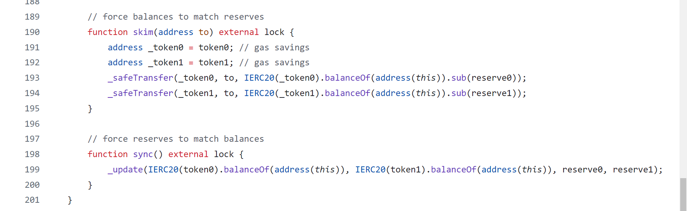

>> Uniswap-V2
Hello WEB3, in this blog post I tried my best to explain the UNISWAP-V2 protocol. Uniswap V2 can create an exchange market between any two ERC-20 tokens. In this blog post we will go over the source code for the Uniswap-V2 Core and Uniswap-V2 Periphery contracts that implement this protocol and see why they are written this way.
Uniswap is an automated liquidity protocol powered by a constant product formula and implemented in a system of non-upgradeable smart contracts on the Ethereum blockchain. Core contracts provide fundamental safety guarantees for all parties interacting with Uniswap. Periphery contracts interact with one or more core contracts but are not themselves part of the core.
I have studied many resources to understand this protocol, that are mentioned at below the post. I have uploaded my notes and uniswap-v2 implimentaion contracts which helps you more to understand simply. This blog is divided into 2 parts mainly:
- Introduction to Protocol
- Uniswap-V2 Architecture
>> Introduction to Protocol
Before diving into the protocol we have to known about 3 things.
- ERC-4626 vaults
- ERC-3156 Flash Loans
- Automated Market Maker(AMM)
Uniswap does not directly use ERC 4626 or ERC 3156. However, it is helpful to be familiar with those standards as Uniswap uses similar concepts. Studying ERC-4626 and ERC-3156 before diving into the Uniswap V2 protocol can provide a broader understanding of key concepts in decentralized finance (DeFi) that enhance one's grasp of how Uniswap and other DeFi protocols operate. Both ERC-4626 and ERC-3156 contribute to the composability of DeFi protocols. By understanding these standards, you can see how Uniswap V2 fits into the larger DeFi ecosystem and interacts with other protocols seamlessly.
Automated Market Makers (AMMs) are a crucial component of the Uniswap V2 protocol, providing a decentralized, permissionless, and efficient mechanism for trading cryptocurrencies without the need for traditional order books or centralized intermediaries. In Uniswap V2, users trade directly against liquidity pools, which consist of token pairs provided by liquidity providers (LPs). This decentralized approach removes the need for intermediaries and allows anyone to trade any token pair as long as there is a corresponding pool.
So we are understanding the concepts of ERC-4626 vaults, ERC-3156 falsh loans and Automated Market Makers (AMMs).
#1 ERC-4626 Vaults
ERC-4626 is a standard for tokenized vaults used for ERC-20 tokens, which are smart contracts that manage pooled funds. These vaults can represent various yield-generating strategies, such as lending, staking, or other DeFi activities. EIP-4626 standard allows for the implementation of a standard API for tokenized Vaults representing shares of a single underlying EIP-20 token. This standard is an extension on the EIP-20 token that provides basic functionality for depositing and withdrawing tokens and reading balances.
>> Specification
All EIP-4626 tokenized Vaults msut implement EIP-20 to represent shares. If a Vault is to be non-transferrable, it may revert on calls to transfer or transferFrom. The EIP-20 operations balanceOf, transfer, totalSupply, etc. operate on the Vault “shares” which represent a claim to ownership on a fraction of the Vault’s underlying holdings. All EIP-4626 tokenized Vaults must implement EIP-20’s optional metadata extensions. The name and symbol functions should reflect the underlying token’s name and symbol in some way. EIP-4626 tokenized Vaults may implement EIP-2612 to improve the UX of approving shares on various integrations.
>> ERC-4626 Motivation
Let’s use a real example to motivate the design.
- Let’s say we all own a company, or a liquidity pool, that earns a stablecoin DAI periodically. The stablecoin DAI is the asset in this case.
- One inefficient way we could distribute the earnings is to push out DAI to each of the holders of the company on a pro-rata basis. But this would be extremely expensive gas wise.
- Similarly, if we were to update everyone’s balance inside a smart contract, that would be expensive too.
- Instead, this is how the workflow would work with ERC4626.
- Let’s say you and nine friends get together and each deposit 10 DAI each into the ERC4626 vault (100 DAI total). You get back one share.
- So far so good. Now your company earns 10 more DAI, so the total DAI inside the vault is now 110 DAI.
- When you trade your share back for your part of the DAI, you don’t get 10 DAI back, but 11.
- Now there is 99 DAI in the vault, but 9 people to share it among. If they were to each withdraw, they would get 11 DAI each.
- Note how efficient this is. When someone makes a trade, instead of updating everyones shares one-by-one, only the total supply of shares and the amount of assets in the contract changes.
- ERC4626 does not have to be used in this manner. You can have an arbitrary mathematical formula that determines the relationship between shares and assets. For example, you could say every time someone withdraws the asset, they also have to pay some sort of a tax that depends on the block timestamp or something like that.
- The ERC 4626 standard provides a gas efficient means for executing very common DeFi accounting practices.
>> ERC-4626 Smart Contract
>> ERC-4626 functions
>> asset() -> address
The address of the underlying token used for the Vault for accounting, depositing, and withdrawing. Assest be an ERC-20 token contract.
>> decimals() -> unit8
Decimals are computed by adding the decimal offset on top of the underlying asset's decimals. This "original" value is cached during construction of the vault contract.
>> totalAssests() -> unit256
Total amount of the underlying asset that is “managed” by Vault. SHOULD include any compounding that occurs from yield. MUST be inclusive of any fees that are charged against assets in the Vault.
>> convertToShares(uint256 assets) -> unit256
The amount of shares that the Vault would exchange for the amount of assets provided, in an ideal scenario where all the conditions are met. MUST NOT be inclusive of any fees that are charged against assets in the Vault. MUST NOT show any variations depending on the caller. MUST NOT reflect slippage or other on-chain conditions, when performing the actual exchange. MUST NOT revert unless due to integer overflow caused by an unreasonably large input. MUST round down towards 0. This calculation MAY NOT reflect the “per-user” price-per-share, and instead should reflect the “average-user’s” price-per-share, meaning what the average user should expect to see when exchanging to and from.
>> convertToAssets(uint256 shares) -> uint256
The amount of assets that the Vault would exchange for the amount of shares provided, in an ideal scenario where all the conditions are met. MUST NOT be inclusive of any fees that are charged against assets in the Vault. MUST NOT show any variations depending on the caller. MUST NOT reflect slippage or other on-chain conditions, when performing the actual exchange. MUST NOT revert unless due to integer overflow caused by an unreasonably large input. MUST round down towards 0. This calculation MAY NOT reflect the “per-user” price-per-share, and instead should reflect the “average-user’s” price-per-share, meaning what the average user should expect to see when exchanging to and from.
>> maxDeposit() -> uint256
Maximum amount of the underlying asset that can be deposited into the Vault for the receiver, through a deposit call. MUST return the maximum amount of assets deposit would allow to be deposited for receiver and not cause a revert, which MUST NOT be higher than the actual maximum that would be accepted (it should underestimate if necessary). This assumes that the user has infinite assets, i.e. MUST NOT rely on balanceOf of asset. MUST factor in both global and user-specific limits, like if deposits are entirely disabled (even temporarily) it MUST return 0. MUST return 2 ** 256 - 1 if there is no limit on the maximum amount of assets that may be deposited.
>> previewDeposit(uint256 assets) -> uint256
Allows an on-chain or off-chain user to simulate the effects of their deposit at the current block, given current on-chain conditions. MUST return as close to and no more than the exact amount of Vault shares that would be minted in a deposit call in the same transaction. I.e. deposit should return the same or more shares as previewDeposit if called in the same transaction. MUST NOT account for deposit limits like those returned from maxDeposit and should always act as though the deposit would be accepted, regardless if the user has enough tokens approved, etc. MUST be inclusive of deposit fees. Integrators should be aware of the existence of deposit fees. MUST NOT revert due to vault specific user/global limits. MAY revert due to other conditions that would also cause deposit to revert. Note that any unfavorable discrepancy between convertToShares and previewDeposit SHOULD be considered slippage in share price or some other type of condition, meaning the depositor will lose assets by depositing.
>> deposit(uint256 assets, address receiver) -> uint256
Mints shares Vault shares to receiver by depositing exactly assets of underlying tokens. MUST emit the Deposit event. MUST support EIP-20 approve / transferFrom on asset as a deposit flow. MAY support an additional flow in which the underlying tokens are owned by the Vault contract before the deposit execution, and are accounted for during deposit. MUST revert if all of assets cannot be deposited (due to deposit limit being reached, slippage, the user not approving enough underlying tokens to the Vault contract, etc). Note that most implementations will require pre-approval of the Vault with the Vault’s underlying asset token.
>> maxMint() -> uint256
Maximum amount of shares that can be minted from the Vault for the receiver, through a mint call. MUST return the maximum amount of shares mint would allow to be deposited to receiver and not cause a revert, which MUST NOT be higher than the actual maximum that would be accepted (it should underestimate if necessary). This assumes that the user has infinite assets, i.e. MUST NOT rely on balanceOf of asset. MUST factor in both global and user-specific limits, like if mints are entirely disabled (even temporarily) it MUST return 0. MUST return 2 ** 256 - 1 if there is no limit on the maximum amount of shares that may be minted.
>> previewMint(uint256 shares) -> uint256
Allows an on-chain or off-chain user to simulate the effects of their mint at the current block, given current on-chain conditions. MUST return as close to and no fewer than the exact amount of assets that would be deposited in a mint call in the same transaction. I.e. mint should return the same or fewer assets as previewMint if called in the same transaction. MUST NOT account for mint limits like those returned from maxMint and should always act as though the mint would be accepted, regardless if the user has enough tokens approved, etc. MUST be inclusive of deposit fees. Integrators should be aware of the existence of deposit fees. MUST NOT revert due to vault specific user/global limits. MAY revert due to other conditions that would also cause mint to revert. Note that any unfavorable discrepancy between convertToAssets and previewMint SHOULD be considered slippage in share price or some other type of condition, meaning the depositor will lose assets by minting.
>> mint(uint256 shares, address receiver) -> uint256
Mints exactly shares Vault shares to receiver by depositing assets of underlying tokens. MUST emit the Deposit event. MUST support EIP-20 approve / transferFrom on asset as a mint flow. MAY support an additional flow in which the underlying tokens are owned by the Vault contract before the mint execution, and are accounted for during mint. MUST revert if all of shares cannot be minted (due to deposit limit being reached, slippage, the user not approving enough underlying tokens to the Vault contract, etc). Note that most implementations will require pre-approval of the Vault with the Vault’s underlying asset token.
>> maxWithdraw(address owner) -> uint256
aximum amount of the underlying asset that can be withdrawn from the owner balance in the Vault, through a withdraw call. MUST return the maximum amount of assets that could be transferred from owner through withdraw and not cause a revert, which MUST NOT be higher than the actual maximum that would be accepted (it should underestimate if necessary). MUST factor in both global and user-specific limits, like if withdrawals are entirely disabled (even temporarily) it MUST return 0.
>> previewWithdraw(uint256 assets) -> uint256
Allows an on-chain or off-chain user to simulate the effects of their withdrawal at the current block, given current on-chain conditions. MUST return as close to and no fewer than the exact amount of Vault shares that would be burned in a withdraw call in the same transaction. I.e. withdraw should return the same or fewer shares as previewWithdraw if called in the same transaction. MUST NOT account for withdrawal limits like those returned from maxWithdraw and should always act as though the withdrawal would be accepted, regardless if the user has enough shares, etc. MUST be inclusive of withdrawal fees. Integrators should be aware of the existence of withdrawal fees. MUST NOT revert due to vault specific user/global limits. MAY revert due to other conditions that would also cause withdraw to revert. Note that any unfavorable discrepancy between convertToShares and previewWithdraw SHOULD be considered slippage in share price or some other type of condition, meaning the depositor will lose assets by depositing.
>> withdraw(uint256 assets, address receiver, address owner) -> uint256
Burns shares from owner and sends exactly assets of underlying tokens to receiver. MUST emit the Withdraw event. MUST support a withdraw flow where the shares are burned from owner directly where owner is msg.sender. MUST support a withdraw flow where the shares are burned from owner directly where msg.sender has EIP-20 approval over the shares of owner. MAY support an additional flow in which the shares are transferred to the Vault contract before the withdraw execution, and are accounted for during withdraw. SHOULD check msg.sender can spend owner funds, assets needs to be converted to shares and shares should be checked for allowance. MUST revert if all of assets cannot be withdrawn (due to withdrawal limit being reached, slippage, the owner not having enough shares, etc). Note that some implementations will require pre-requesting to the Vault before a withdrawal may be performed. Those methods should be performed separately.
>> maxRedeem(address owner) -> uint256
Maximum amount of Vault shares that can be redeemed from the owner balance in the Vault, through a redeem call. MUST return the maximum amount of shares that could be transferred from owner through redeem and not cause a revert, which MUST NOT be higher than the actual maximum that would be accepted (it should underestimate if necessary). MUST factor in both global and user-specific limits, like if redemption is entirely disabled (even temporarily) it MUST return 0.
>> previewRedeem(uint256 shares) -> uint256
Allows an on-chain or off-chain user to simulate the effects of their redeemption at the current block, given current on-chain conditions. MUST return as close to and no more than the exact amount of assets that would be withdrawn in a redeem call in the same transaction. I.e. redeem should return the same or more assets as previewRedeem if called in the same transaction. MUST NOT account for redemption limits like those returned from maxRedeem and should always act as though the redemption would be accepted, regardless if the user has enough shares, etc. MUST be inclusive of withdrawal fees. Integrators should be aware of the existence of withdrawal fees. MUST NOT revert due to vault specific user/global limits. MAY revert due to other conditions that would also cause redeem to revert. Note that any unfavorable discrepancy between convertToAssets and previewRedeem SHOULD be considered slippage in share price or some other type of condition, meaning the depositor will lose assets by redeeming.
>> redeem(uint256 shares, address receiver, address owner) -> uint256
Burns exactly shares from owner and sends assets of underlying tokens to receiver. MUST emit the Withdraw event. MUST support a redeem flow where the shares are burned from owner directly where owner is msg.sender. MUST support a redeem flow where the shares are burned from owner directly where msg.sender has EIP-20 approval over the shares of owner. MAY support an additional flow in which the shares are transferred to the Vault contract before the redeem execution, and are accounted for during redeem. SHOULD check msg.sender can spend owner funds using allowance. MUST revert if all of shares cannot be redeemed (due to withdrawal limit being reached, slippage, the owner not having enough shares, etc). Note that some implementations will require pre-requesting to the Vault before a withdrawal may be performed. Those methods should be performed separately.
>> Summary of functions

>> ERC-4626 Events
ERC4626 has only two events in addition to the ERC20 events it inherits: Deposit and Withdraw.
Must be emitted when tokens are deposited into the Vault via the mint and deposit methods.
WithdrawMust be emitted when shares are withdrawn from the Vault in redeem or withdraw methods.
event Deposit(
address indexed sender,
address indexed owner,
uint256 assets,
uint256 shares
)
event Withdraw(
address indexed sender,
address indexed receiver,
address indexed owner,
uint256 assets,
uint256 share
)
>> ERC-4626 Vault Maths
The Vault has a few functions that are used to calculate the total assets and total shares. For depositing or withdrawing tokens the ratio between the shares and the underlying tokens, which reflects the value of the underlying tokens relative to the shares.
In an ERC-4626 vault, the mathematics of depositing and withdrawing ensures that the value of the shares accurately reflects the value of the underlying assets. When depositing, users receive shares proportional to the amount of underlying tokens they deposit. When withdrawing, users receive underlying tokens proportional to the number of shares they redeem. This system maintains a fair and transparent value exchange, making ERC-4626 a robust standard for tokenized vaults in DeFi.
>> How many Shares to mint for given Assests
Initial State- Balance of Vault before Deposit(B): 1000 DAI
- Total Shares before Mint(T): 100 shares
- Exchange Rate (Shares to Assets): 1 share = 10 DAI
- This means that the vault currently has a 1:10 ratio of shares to DAI.
- Amount to Deposit(a): 200 DAI
- Shares to mint(s): ?
Amount of Shares to Mint(s) = (a * T) / B
shares = (200 * 100) / 1000
shares = 20
For depositing 200 DAI at the following states, we have to mint 20 shares to the user.
>> How many Assests to give for given Shares
Initial State- Balance of Vault before Deposit(B): 1000 DAI
- Total Shares before Mint(T): 100 shares
- Exchange Rate (Shares to Assets): 1 share = 10 DAI
- This means that the vault currently has a 1:10 ratio of shares to DAI.
- Amount to Withdraw(a): ? DAI
- Shares to burn(s): 10
Amount to Withdraw(a) = (s * B) / T
amount = (10 * 1000) / 100
amount = 100
For burning 10 Shares at the following states, user can Withdraw 100 DAI.
>> Problems with slippage
Any token swapping protocol has an issue where the user might not get back the amount of tokens they were expecting. For example, with automated market makers, a large trade might use up the liquidity and cause the price to move substantially.
Another issue is a transaction getting frontrun or experiencing a sandwich attack. In the examples above, we've assumed the ERC4626 contract maintains a one-to-one relationship between asset and shares regardless of the supply, but the ERC4626 standard does not dictate how the pricing algorithm should work.
For example, suppose we make the amount of shares issued a function of the square root of the assets deposited. In that case, whoever deposits first will get a larger amount of shares. This could encourage opportunistic traders to frontrun deposit orders and force the next buyer to pay a larger amount of the asset for the same amount of shares.
The defense against this is simple: the contract interacting with an ERC4626 should measure the amount of shares it received during a deposit (and assets during a withdraw) and revert if it does not receive the quantity expected within a certain slippage tolerance. This is a standard design pattern to deal with slippage issues.
>> ERC4626 inflation attack
Although ERC4626 is agnostic to the algorithm that translates prices to shares, most implementations use a linear relationship. If there are 10,000 assets, and 100 shares, then 100 assets should result in 1 share. But what happens if someone sends 99 assets? It will round down to zero and they get zero shares. Of course no-one would intentionally throw away their money like this. However, an attacker can frontrun a trade by donating assets to the vault.
If an attacker donates money to the vault, one share is suddenly worth more than it was initially. If there are 10,000 assets in the vault corresponding to 100 shares, and the attacker donates 20,000 assets, then one share is suddenly worth 300 assets instead of 100 assets. When the victim’s trade trades in assets to get back shares, they suddenly get a lot fewer shares — possibly zero.
There are three defenses:
- Revert if the amount received is not within a slippage tolerance (described earlier).
- The deployer should deposit enough assets into the pool such that doing this inflation attack would be too expensive.
- Add "virtual liquidity" to the vault so the pricing behaves as if the pool had been deployed with enough assets.
When calculating the amount of shares a depositor receives, the total supply is artificially inflated (at a rate the programmer specifies in _decimalsOffset()).
Let's walk through an example. By way of reminder, here is what the variables above mean:
- totalSupply() = total number of shares issued
- totalAssets() = the balance of assets held by the ERC4626
- assets = the amount of assets the user is depositing
The formula is
shares_received = assets_deposited * totalSupply() / totalAssets();
There is some implementation details for rounding in favor of the pool and adding 1 to totalAssets() to ensure we don't divide by zero if the pool is empty.
Let's say we have the following numbers:
- assets_deposited = 1,000
- totalSupply() = 1,000
- totalAssets() = 999,999 (the formula adds 1, so we will set it this way to make the number nice)
In that case, the shares the user will get is 1,000 x 1,000 ÷ 1,000,000, or exactly 1.
This is obviously very fragile. If the attacker frontruns the deposit of 1,000 shares and deposits assets, then the victim will get zero back, because 1 million divided by a number larger than 1 million is zero in integer division.
How does virtual liquidity solve this? We would set _decimalOffset() to be 3, so that way totalSupply() gets 1,000 added to it.
Effectively, we are making the numerator 1,000 times larger. This forces the attacker to make a donation 1,000 times as large, which disincentivizes them from conducting the attack.
>> Example for Inflation Attack
- When a depositor wants to be the initial depositor, sends 10 USDC to the vault.
- Attacker see’s that tx and front runs with calling deposit with 1 USDC. So, now the attacker becomes the initial depositor and totalSupply becomes 1. Attacker receives 1 share.
- And now attacker donates equal amount of USDC that user transfer to the vault without calling the deposit function. So, the totalSupply won’t be updated. totalSupply still 1. And the totalBalance becomes 10 USDC.
- Now the else block of the deposit executes and number of shares that mints to the user becomes 0.
- So, the shares are that minted are only to attacker. So attacker owns the whole ownership on vault. Attacker can withdraw all the balance in the vault now.
>> Security Considerations
Fully permissionless use cases could fall prey to malicious implementations which only conform to the interface but not the specification. It is recommended that all integrators review the implementation for potential ways of losing user deposits before integrating.
If implementors intend to support EOA account access directly, they should consider adding an additional function call for deposit/mint/withdraw/redeem with the means to accommodate slippage loss or unexpected deposit/withdrawal limits, since they have no other means to revert the transaction if the exact output amount is not achieved. The methods totalAssets, convertToShares and convertToAssets are estimates useful for display purposes, and do not have to confer the exact amount of underlying assets their context suggests.
The preview methods return values that are as close as possible to exact as possible. For that reason, they are manipulable by altering the on-chain conditions and are not always safe to be used as price oracles. This specification includes convert methods that are allowed to be inexact and therefore can be implemented as robust price oracles. For example, it would be correct to implement the convert methods as using a time-weighted average price in converting between assets and shares.
Integrators of EIP-4626 Vaults should be aware of the difference between these view methods when integrating with this standard. Additionally, note that the amount of underlying assets a user may receive from redeeming their Vault shares (previewRedeem) can be significantly different than the amount that would be taken from them when minting the same quantity of shares (previewMint). The differences may be small (like if due to rounding error), or very significant (like if a Vault implements withdrawal or deposit fees, etc). Therefore integrators should always take care to use the preview function most relevant to their use case, and never assume they are interchangeable.
Finally, EIP-4626 Vault implementers should be aware of the need for specific, opposing rounding directions across the different mutable and view methods, as it is considered most secure to favor the Vault itself during calculations over its users:
- If (1) it’s calculating how many shares to issue to a user for a certain amount of the underlying tokens they provide or (2) it’s determining the amount of the underlying tokens to transfer to them for returning a certain amount of shares, it should round down.
- If (1) it’s calculating the amount of shares a user has to supply to receive a given amount of the underlying tokens or (2) it’s calculating the amount of underlying tokens a user has to provide to receive a certain amount of shares, it should round up.
The only functions where the preferred rounding direction would be ambiguous are the convertTo functions. To ensure consistency across all EIP-4626 Vault implementations it is specified that these functions MUST both always round down. Integrators may wish to mimic rounding up versions of these functions themselves, like by adding 1 wei to the result.
Although the convertTo functions should eliminate the need for any use of an EIP-4626 Vault’s decimals variable, it is still strongly recommended to mirror the underlying token’s decimals if at all possible, to eliminate possible sources of confusion and simplify integration across front-ends and for other off-chain users.
>> Real life examples of share / asset accounting
Earlier versions of Compound minted what they called c-tokens to users who supplied liquidity. For example, if you deposited USDC, you would get a separate cUSDC (Compound USDC) back. When you decided to stop lending, you would send back your cUSDC to compound (where it would be burned) then get your pro-rata share of the USDC lending pool.
Uniswap used LP tokens as “shares” to represent how much liquidity someone had put into a pool, (and how much they could withdraw pro-rata) when they redeemed the LP tokens for the underlying asset.
#2 ERC-3156 Flash Loan
A flash loan is a smart contract transaction in which a lender smart contract lends assets to a borrower smart contract with the condition that the assets are returned, plus an optional fee, before the end of the transaction. This ERC specifies interfaces for lenders to accept flash loan requests, and for borrowers to take temporary control of the transaction within the lender execution. The process for the safe execution of flash loans is also specified.

If the borrower does not pay back the loan, therequire statement with the message “flash not paid back” will cause the entire transaction to revert.
- Only contracts can work with flashloans
- Flash loans do not need collateral
>> What are flashloans used for?
The most common use case for a flash loan is to do an arbitrage trade. For example, if Ether is trading for $1,200 in one pool and $1,300 in another DeFi application, it would be desirable to buy the Ether in the first pool and sell it in the second pool for a $100 profit. However, you need to money to buy the Ether in the first place. A flash loan is the ideal solution for it, as you don’t need $1,200 lying around. You can borrow $1,200 of Ether, sell it for $1,300, and pay back the $1,200 keeping a $100 profit for yourself (minus fees).
Refinancing LoansFor regular DeFi loans, they typically require some kind of collateral. For example, if you were borrowing $10,000 in stable coins, you would need to deposit $15,000 of Ether as collateral.
If your stable coins loan had a 5% interest and you wanted to refinance with another lending smart contract at 4%, you would need to
- pay back the $10,000 in stable coins
- withdraw the $15,000 Ether collateral
- deposit the $15,000 Ether collateral into the other protocol
- borrow $10,000 in stable coins again at the lower rate
This would be problematic if you had the $10,000 tied up in some other application. With a flashloan, you can do steps 1-4 without using any of your own stable coins.
Exchanging collateralIn the example above, the borrower was using $15,000 of Ether as collateral. But suppose the protocol is offering a lower collateralization ratio using wBTC (wrapped bitcoin)? The borrower could use a flash loan and a similar set of steps outline above to swap out the collateral instead of the principal.
Liquidating BorrowersIn the context of DeFi loans, if the collateral falls below a certain threshold, then the collateral can get liquidated — forcibly sold to cover the cost of the loan. In the example above, if the value of the Ether was to drop to $12,000, then the protocol might allow someone to purchase the Ether for $11,500 if they first pay back the $10,000 loan.
A liquidator could use a flash loan to pay off the $10,000 stable coin loan and receive $11,500. They would then sell this on another exchange for stable coins, and then pay back the flash loan.
Increase yield for other DeFi applicationsUniswap and AAVE earn depositors’ money through trading fees or lending interest. But since they have such a large amount of capital in one place, they can make additional money by also offering flash loans. This increases the efficiency of capital since the same capital now has more uses.
Hacking Smart ContractsFlash loans are probably most famous for their use by black hat hackers to exploit protocols. The primary attack vectors for flash loans are price manipulation and governance (vote) manipulation. Used on DeFi applications with inadequate defense, flash loans allow attackers to heavily buy up an asset increasing its price, or acquiring a bunch of voting tokens to push through a governance proposal.
The following is a list of flash loan hacks for the curious. Vulnerability is two-sided however. A flash lending and flash borrowing contract can also be vulnerable to losing money if not implemented properly.
>> Examples of Flash Loan Hacks
Flash loan attacks are one of the most common exploits, presumably because developers coming from a web2 background aren’t accustomed to it. Here are some of the more notorious examples. I am recommended to solve the Damn Vulnerable Defi CTF's which helps to understand more about flashloans.
>> ERC3156 Protocol
ERC-3156 is an Ethereum standard that defines an interface for flash loans, a unique type of loan in decentralized finance (DeFi) that must be borrowed and repaid within the same transaction. Flash loans enable users to borrow large amounts of cryptocurrency without collateral, provided the loan is repaid before the transaction ends. If the borrower fails to repay, the entire transaction is reverted, ensuring the lender's funds are secure.
>> ERC3156 Receiver Specification
The first aspect of the standard is the interface the borrower needs to implement, which is shown below. The borrower only needs to implement one function.

We describe the function parameters at below.
initiatorThis is the address that initiated the flash loan. You probably want some kind of validation here so that untrusted addresses are not initiating flashloans on your contract. Usually, the address would be you, but you shouldn’t assume that!
The function onFlashLoan is expected to be called by the flash loan contract, not the initiator. You should check msg.sender is the flash loan contract inside the onFlashLoan() function because this function is external and anyone can call it. Initiator is not msg.sender or the flash loan contract. It is the address that triggered the flash lending contract to call the receiver’s onFlashLoan function.
tokenThis is the address of the ERC20 token you are borrowing. Contracts offering flash loans will usually hold several tokens they can flash loan out. The ERC3156 flash loan standard does not support flash loaning native Ether, but this can be implemented by flash loaning WETH and having the borrower unwrap the WETH. Because the borrowing contract is not necessarily the contract that called the flash loaner, the borrowing contract may need to be told what token is being flash lent.
feeFee is how much of the token needs to be paid as a fee for the loan. It is denominated in absolute amount, not percentages.
dataIf your flash loan receiving contract isn’t hard coded to take a particular action when receiving a flash loan, you can parameterize its behavior with the data parameter. For example, if your contract is arbitraging trading pools, then you would specify which pools to trade with.
return valueThe contract must return keccak256("ERC3156FlashBorrower .onFlashLoan") for reasons we will discuss later.
Reference implementation of the borrowerThis has been modified from the code in the ERC 3156 spec to make the snippet smaller. Note that this contract is still placing perfect trust into the flash lender. If the flash lender were somehow compromised, the contract below could be exploited through feeding it bogus amount and fee and initiator data. If the lender is immutable, this isn’t a concern, but it could be an attack vector if the lender is upgradeable.

>> ERC3156 Lender Specification
Below is the interface for the lender specified by ERC3156

The arguments in the interface above have the same meaning as described in the previous section, so it won’t be repeated here.
The flashLoan() function needs to accomplish a few important operations:
- Someone might call flashLoan() with a token the flash loan contract does not support. This should be checked for.
- Someone might call flashLoan() with an amount that is larger than maxFlashLoan. This also should be checked for
- data is simply forwarded to the caller.
More importantly, flashLoan() must transfer the tokens to the receiver and transfer them back. It should not rely on the borrower transferring the tokens back for repayment. The rational for this will be discussed in the next section. We have copied the reference implementation which can be found in the EIP 3156 Spec, here to emphasize the important parts:

Note that the reference implementation is assuming that the ERC20 tokens return true on success, which not all do, so use the SafeTransfer library if using non-compliant ERC20 tokens.
>> Security Considerations
The borrowing smart contract must have the controls in place to only allow the flash lender contract to be the caller of onFlashLoan(). Otherwise, some actor other than the flash lender can call onFlashLoan() and cause unexpected behavior.
Furthermore, anyone can call flashloan() with an arbitrary borrower as the target and pass arbitrary data. To ensure the data is not malicious, a flash loan receiver contract should only allow a restricted set of initiators.
Reentrance locks are very importantERC 3156 by definition cannot follow the check effects pattern to prevent reentrancy. It has to notify the borrower it has received the tokens (make an external call), then transfer the tokens back. As such, nonReentrant locks should be added to the contract.
It is important that the lender is the one transferring the tokens back or that reentrancy locks are in place. In the above implementations, the lender transfers the tokens back from the borrower. The borrower does not transfer the loans to the lender. This is important to avoid “side entrances” where the borrower deposits money into the protocol as a lender. Now the pool sees it’s balance has returned to what it was before, but the borrower suddenly has become a lender with a large deposit.
UniswapV2’s flash loan does not transfer the tokens back after the flash loan finishes. However, it uses a reentrancy lock to ensure that the borrower cannot “pay back the loan” by depositing it back into the protocol as if they were a lender.
For the borrower, ensure only flash lender contract can call onFlashLoan The flash lender is hardcoded to only call the receiver’s onFlashLoan() function and nothing else. If a borrower had a way to specify which function the flash lender would call, then the flash loan could be manipulated into transferring other tokens in it’s possession (by calling ERC20.transfer) or granting approval to it’s token balance to a malicious address. Because such actions require an explicit call to an ERC20 transfer or approve, this can’t happen if the flash lender can only call onFlashLoan().
Using token.balanceOf(address(this)) can be manipulatedIn the implementation above, we do not use balanceOf(address(this)) except to determine the maximum flash loan size. This can be altered by someone else directly transferring tokens to the contract, interfering with the logic. The way we know the flash loan was paid back is because the lender transferred back the loan amount + fee. There are valid ways to use balanceOf(address(this)) to check repayment, but this must be combined with reentrancy checks to avoid paying back the loan as a deposit.
Why the flash borrower needs to return keccak256("ERC3156FlashBorrower .onFlashLoan");This handles the situation where a contract (not the flash lender contract) with a fallback function has given approval to the flash lending contract. Someone could repeatedly initiate a flashloan with that contract as a recipient. Then the following would happen:
The victim contract gets a flashloan The victim contract gets called with onFlashLoan() and the fallback function is triggered but does not revert. The fallback function responds to any function call that doesn't match the rest of the functions in the contract, so it will respond to a onFlashLoan() call. The flash lender withdraws tokens from the borrower + fee If this operation happens in a loop, the victim contract with the fallback will get drained. The same could happen with an EOA wallet, since calling a wallet address with onFlashLoan does not revert.
Checking that the onFlashLoan function does not revert isn’t good enough. The flash lender also checks that the value keccack256("ERC3156FlashBorrower .onFlashLoan") is returned so that it knows the borrower intended to borrow the tokens and also pay back the fee.
#3 Automated Market Makers(AMMs)
Uniswap is a DeFi app that enables traders to swap one token for another in a trustless manner. It was one of the early automated market makers for trading (though not the first).
Automated market makers are an alternative to an order book, which the reader is assumed to already be familiar with.
>> What Are Liquidity Pools and Liquidity Providers?
Liquidity pools are collections of funds locked in a smart contract on a decentralized exchange (DEX) or other DeFi (Decentralized Finance) platforms. These funds are used to facilitate trading by providing the necessary liquidity for buying and selling assets without relying on traditional market makers. Liquidity pools are fundamental to the functioning of automated market makers (AMMs) like Uniswap, SushiSwap, and Balancer.
Liquidity Providers (LPs) are users who deposit tokens into liquidity pools. In return for providing liquidity, LPs receive LP tokens, which represent their share of the pool and the fees generated from trades.
Liquidity pools and liquidity providers are essential components of decentralized exchanges and the broader DeFi ecosystem. Liquidity pools enable efficient and decentralized trading, while liquidity providers are incentivized through fees and rewards for contributing their assets to these pools. Understanding how these mechanisms work is crucial for anyone participating in or developing for the DeFi space.
>> What Are the Different Automated Market Maker (AMM) Models?
Constant function market makers (CFMMs), such as constant product market makers, constant sum market makers, and constant mean market makers, are a class of first-generation AMMs made popular by protocols like Bancor, Curve, and Uniswap. These AMM exchanges are based on a constant function, where the combined asset reserves of trading pairs must remain unchanged. In non-custodial AMMs, user deposits for trading pairs are pooled within a smart contract that any trader can use for token swap liquidity. Users trade against the smart contract (pooled assets) as opposed to directly with a counterparty as in order book exchanges.
>> Constant Product Market Maker (CPMM)
The first type of CFMM to emerge was the constant product market maker (CPMM), which was popularized by the first AMM-based DEX, Bancor. CPMMs are based on the function x * y = k, which establishes a range of prices for two tokens according to the available quantities (liquidity) of each token. When the supply of token X increases, the token supply of Y must decrease, and vice-versa, to maintain the constant product K. When plotted, the result is a hyperbola where liquidity is always available but at increasingly higher prices, which approach infinity at both ends.
>> Constant Sum Market Maker (CSMM)
The second type is a constant sum market maker (CSMM), which is ideal for zero-price-impact trades but does not provide infinite liquidity. CSMMs follow the formula x + y = k, which creates a straight line when plotted. This design unfortunately allows arbitrageurs to drain one of the reserves if the off-chain reference price between the tokens is not 1:1. Such a situation would destroy one side of the liquidity pool, leaving all of the liquidity residing in just one of the assets and therefore leaving no more liquidity for traders. Because of this, CSMM is a model rarely used by AMMs.
>> Constant Mean Market Maker (CMMM)
The third type is a constant mean market maker (CMMM), which enables the creation of AMMs that can have more than two tokens and be weighted outside of the standard 50/50 distribution. In this model, the weighted geometric mean of each reserve remains constant. For a liquidity pool with three assets, the equation would be the following: (x * y * z) ^ (⅓) = k. This allows for variable exposure to different assets in the pool and enables swaps between any of the pool’s assets.
>> Problems of First-Generation AMM Models
Many of first-generation AMMs are limited by impermanent loss and low capital efficiency, which impacts both liquidity providers and traders.
>> Even small orders move the price in AMMs
If you place an order to buy 100 shares of Apple, your order will not cause the price to move because there are thousands of shares available for sale at the price you specify. This is not the case with an automated market maker. Every trade, no matter how small, moves the price.
This has two implications. A buy or sell order will generally encounter more slippage than in an order book model, and the mechanism of swapping invites sandwich attacks.
>> Sandwich attacks are largely unavoidable in AMMs
Since every order is going to move the price, MEV (Maximal Extractable Value) traders will wait for a sufficiently large buy order to come in, then place a buy order right before the victim's order and a sell order right after it. The leading buy order will drive up the price for the original trader, which gives them worse execution. It’s called a sandwich attack, since the victim’s trade is “sandwiched” between the attackers.
- Attacker’s first buy (front run): drives up price for victim
- Victim’s buy: drive up price even further
- Attacker’s sell: sell the first buy at a profit
>> Liquidity providers don’t have control over the price their assets are sold at
For reasons we will discuss later, liquidity providers can only provide assets proportional to the current ratio of tokens in the pool. For example, if there are 100 token 𝒳 and 200 token 𝒴, the new liquidity provider must provide twice as many token 𝒴 as 𝒳.
In a traditional order book, a market maker can place limit orders at levels they believe reflect a desirable bid or ask (For example, place a bid order below the current market price or place a sell order above the current market price), but this is not possible with an automated market maker. Remember that Automated Market Makers use a formula to set prices based on the asset ratios in the pool, as a result market makers cannot set specific prices at which they wish to sell their assets.
>> Impermanent Loss
Impermanent loss is the difference in value over time between depositing tokens in an AMM versus simply holding those tokens in a wallet. This loss occurs when the market-wide price of tokens inside an AMM diverges in any direction. Since AMMs don’t automatically adjust their exchange rates, they require an arbitrageur to buy the underpriced assets or sell the overpriced assets until the prices offered by the AMM match the market-wide price of external markets. The profit extracted by arbitrageurs is siphoned from the pockets of liquidity providers, creating a loss.
>> Low Capital Efficiency
Traditional AMM designs require large amounts of liquidity to achieve the same level of price impact as an order book-based exchange. This is due to the fact that a substantial portion of AMM liquidity is available only when the pricing curve begins to turn exponential. As such, most liquidity will never be used by rational traders due to the extreme price impact experienced.
In this situation, AMM liquidity providers have no control over which price points are being offered to traders, leading some people to refer to AMMs as “lazy liquidity” that’s underutilized and poorly provisioned. Meanwhile, market makers on order book exchanges can control exactly the price points at which they want to buy and sell tokens. This leads to very high capital efficiency, but with the trade-off of requiring active participation and oversight of liquidity provisioning.
>> Improving AMM Models With Hybrid, Dynamic, Proactive, and Virtual Solutions
The above limitations are being overcome by innovative projects with new design patterns, such as hybrid automated market makers, dynamic automated market makers, proactive market makers, and virtual automated market makers.
>> Hybrid CFMMs
As AMM-based liquidity has progressed, we have seen the emergence of advanced hybrid CFMMs which combine multiple functions and parameters to achieve specific behaviors, such as adjusted risk exposure for liquidity providers or reduced price impact for traders.
For example, Curve AMMs—known as the stableswap invariant—combine both a CPMM and CSMM using an advanced formula to create denser pockets of liquidity that bring down price impact within a given range of trades. The result is a hyperbola (blue line) that returns a linear exchange rate for large parts of the price curve and exponential prices when exchange rates near the outer bounds.

Hybrid CFMMs enable extremely low price impact trades by using an exchange rate curve that is mostly linear and becomes parabolic only once the liquidity pool is pushed to its limits. Liquidity providers earn more in fees (albeit on a lower fee-per-trade basis) because capital is used more efficiently, while arbitrageurs still profit from rebalancing the pool.
Curve offers low-price-impact swaps between tokens that have a relatively stable 1:1 exchange rate. This means its solution is predominantly designed for stablecoins. However, Curve has also recently launched support for more volatile token pairs with similarly concentrated liquidity.
>> Dynamic Automated Market Maker (DAMM)
Using a dynamic automated market maker (DAMM) model, Sigmadex leverages Chainlink Price Feeds and implied volatility to help dynamically distribute liquidity along the price curve. By incorporating multiple dynamic variables into its algorithm, it can create a more robust market maker that adapts to changing market conditions. During periods of low volatility, Sigmadex can concentrate liquidity near the market price and increase capital efficiency, and then expand it during periods of high volatility to help protect traders from impairment loss.
>> Proactive Market Maker (PMM)
Also aiming to increase liquidity on its protocol, DODO is using a model known as a proactive market maker (PMM) that mimics the human market-making behaviors of a traditional central limit order book. The protocol uses globally accurate market prices from Chainlink Price Feeds to proactively move the price curve of each asset in response to market changes, increasing the liquidity near the current market price. Ultimately, this facilitates more efficient trading and reduces the impairment loss for liquidity providers.
>> Virtual Automated Market Makers (vAMM)
Virtual automated market makers (vAMMs) such as Perpetual Protocol minimize price impact, mitigate impermanent loss, and enable single token exposure for synthetic assets. vAMMs use the same x*y=k constant product formula as CPMMs, but instead of relying on a liquidity pool, traders deposit collateral to a smart contract. By trading synthetic assets rather than the underlying asset, users can gain exposure to the price movements of a wide variety of crypto assets in a highly efficient manner. However, users holding an open position in a synthetic asset are at risk of having their collateral liquidated if the price moves against them.
>> Uniswap V2 Architecture
>> Core Contracts
- UniswapV2Factory: This contract manages the creation of new pools. It records all pairs and provides the addresses of the pair contracts.
- UniswapV2Pair: Each pair contract represents a liquidity pool for a specific token pair. It manages liquidity provision, token swaps, and tracking reserves.
- UniswapV2ERC20: This contract is an ERC-20 implementation for the LP tokens issued to liquidity providers.
Core is minimalist in design, removing all logic that is not strictly necessary to secure liquidity stored in its pools. Logic related to trader security or ease-of-use must be implemented in external helper contracts. Since external helpers can be improved and replaced without needing to migrate liquidity, this improves on the flexibility and modularity of Uniswap.
>> Peripheral Contracts
- UniswapV2Router: This contract provides user-friendly methods for interacting with the core contracts. It includes functions for adding/removing liquidity, swapping tokens, and querying pool information.
- UniswapV2Library: A library with utility functions for interacting with the core contracts.
Periphery contracts described as "Example" are for illustrative purposes only and should not be used in actual transactions.While this is a huge improvement, there are some new smart contract patterns introduced which developers building on top of Uniswap should be aware of.
- Core uses WETH instead of ETH. Routers can convert between ETH and WETH allowing users to use ETH directly
- Core stores ERC20 token balances internally instead of relying on the balances stored in the ERC20 token contract
- Core no longer calls transferFrom on msg.sender. Instead ERC20 tokens should be sent to core directly by a router before calling the swap, mint or burn functions.
- Core will determine the number of ERC20 tokens sent to it based on the difference between its current and stored balances.
- Core no longer returns the maximum number of ERC20 tokens for a given input amount. Instead, a router must specify the number of ERC20 tokens it wants. Core will send this number as long as the invariant is preserved after taking 0.3% off any input amount.
- Routers should handle logic around slippage safety checks and multihop trades.
>> The core - periphery pattern
Observe that the router contract above is in a repository called V2-Periphery and the pair is in the V2-Core repository. Uniswap V2 follows the “core / periphery” design pattern where the most essential logic is held in the core while the “optional” logic is held in the periphery. The intent behind this is to have the core hold as little code as possible, which reduces the possibility of bugs in the core business logic.
>> Why not use clones
The EIP 1167 clone pattern is used to create a collection of similar contracts, so why not use that here? Although the deployment would be cheaper, it would introduce an extra 2,600 gas per transaction due to the delegatecall. Since pools are intended to be used frequently, the cost savings from deployment would eventually be lost after a few hundred transactions, so it is worth deploying a pool as a new contract.
>> Architecture concepts
- Twap Oracles
- Calculating the Settlement Price of an AMM Swap
- Uniswap-V2 Core Libraries
- Uniswap-V2 Factory
- Swap function
- Mint and Burn Functions
- MintFee
- Uniswap-V2 Peripheral Libraries
- Uniswap-V2 Migrator
- Uniswap-V2 Routers
- Other functions
- Building a Uniswap V2 Clone
#4 Twap Oracle
>> Oracle definition
An oracle in computer science terms is a “source of truth.” A price oracle is a source of prices. Uniswap has an implied price when holding two assets, and other smart contracts can use this as a price oracle. The intended users of the oracle are other smart contracts, since other smart contracts can easily communicate with Uniswap to determine the price, but getting price data from an off-chain exchange would be a lot harder. However, just taking the ratio of the balances to get the current price isn’t safe.
>> What exactly is “price” in Uniswap?
Suppose we have 1 Ether and 2,000 USDC in a pool. This implies that the price of Ether is 2,000 USDC. Specifically, the price of Ether is 2,000 USDC / 1 Ether.
More generally, the price of an asset, in terms of the price of the other asset in the pair, is a ratio where the “asset you care about” is in the denominator. In the example above, it is saying “how may bars do you need to pay to get one foo”
(ignoring
fees).
In the example above, it is saying “how may bars do you need to pay to get one foo”
(ignoring
fees).
>> Price is a ratio
Because price is a ratio, they need to be stored with a data type which has decimal points (which Solidity types do not have by default). That is, we say Ethereum is 2000 and USDC (in price of Ethereum) is 0.0005 (this is ignoring decimals of both assets).
Uniswap uses a fixed point number with 112 bits of precision on each side of the decimal, this takes up a total of 224 bits, and when packed with a 32 bit number, it uses up a single slot.
>> Motivation behind TWAP
Measuring an instantaneous snapshot of assets in the pool leaves an opportunity for flash loan attacks. That is, someone can make a huge trade using a flash loan to cause a temporary dramatic shift in the price, then take advantage of another smart contract that uses this price to make decisions.
The Uniswap V2 oracle defends against this in two ways:
- It provides a mechanisms for consumers of the price (usually smart contracts) to take the average a previous time period (decided by the user). This means an attacker has to constantly manipulate the price for several blocks, which is a lot more costly than using a flash loan.
- It doesn’t incorporate the current balance into the oracle calculation
>> How TWAP works
A TWAP (Time Weighted Average Price) is like a simple moving average except that times where the price “stayed the same” longer get more weight — a TWAP weights price by how long the price stays at a certain level.
- Over the last day, the price of an asset was $10 for the first 12 hours and $11 for the second 12 hours. The average price is the same as the time weighted average price: $10.5.
- Over the last day, the price of an asset was $10 for the first 23 hours and $11 for the most recent one. The expected average price should be closer to $10 than $11, but it will still be in between those values. Specifically, it will be ($10 * 23 + $11 * 1) / 24 = $10.0417
- Over the last day, the price of an asset was $10 for the first hour, and $11 for the most recent 23 hours. We expect the TWAP to be closer to $11 than 10. Specifically, it will be ($10 * 1 + $11 * 23) / 24 = $10.9583
In general, the TWAP formula is
 Here T is a duration, not a timestamp. That is, how long the price stayed at that level.
Here T is a duration, not a timestamp. That is, how long the price stayed at that level.
>> Uniswap V2 does not store lookback or the denominator
In our example above, we only looked at prices for the last 24 hours, but what if you care about prices for the last hour, week, or some other interval? Uniswap of course cannot store every look back that someone might be interested, and there also isn’t a good way to consistently snapshot the price as someone would have to pay for the gas.
The solution is that Uniswap only stores the numerator of values — every time a change is the liquidity ratio happens (mint, burn, swap, or sync are called), it records the new price and how long the previous price lasted.

The variables price0Cumulativelast and price1CumulativeLast are public, so an interested party needs to snapshot them.
But this is an important point you should always remember price0CumulativeLast and price1CumulativeLast are only updated on lines 79 and 80 in the code above (orange circle), and they can only increase until they overflow. There is no mechanism make them “go down.” They always increase with every call to _update. This means they accumulate prices ever since the pool is launched, which could be a very long time.
>> Limiting the lookback window
Clearly, we are generally not interested in the average price since the pool came into existence. We only want to look back a certain amount of time (1 hour, 1 day, etc).
Here is the TWAP formula gain. If we are only interested in prices since T4, then we want to be doing the following
If we are only interested in prices since T4, then we want to be doing the following
 How do we accomplish this with code? Since the price0Cumulativelast keeps recording
How do we accomplish this with code? Since the price0Cumulativelast keeps recording
 We need a way to isolate the parts we care about. Consider the following
We need a way to isolate the parts we care about. Consider the following
 If we snapshot the price at the end of T3, we get the value UpToTime3. If we wait until T6
finishes, then we do price0Cumulativelast - UpToTime3then we will get the cumulative prices
of
only the recent window. If we divide that by the duration of the RecentWindow (T4 + T5 +
T6),
then we get the TWAP price of the recent window.
If we snapshot the price at the end of T3, we get the value UpToTime3. If we wait until T6
finishes, then we do price0Cumulativelast - UpToTime3then we will get the cumulative prices
of
only the recent window. If we divide that by the duration of the RecentWindow (T4 + T5 +
T6),
then we get the TWAP price of the recent window.
Graphically, this is what is what we are doing with the price accumulator.

>> Only calculating the last 1 hour TWAP in Solidity
If we want a 1 hour TWAP, we need to anticipate that we will need a snapshot of the accumulator one hour from now. So we need to access the public variable price0CumulativeLast and the public function getReserves() to get the last update time, and snapshot those values. (See the snapshot() function below). After at least 1 hour has passed, we can call getOneHourPrice() and we will access the newest value of price0CumulativeLast from Uniswap V2.
Since the time we snapshotted the old price, Uniswap has been updating the accumulator The following code is made as simple as possible for illustration purposes, production use
is
not advised.
The following code is made as simple as possible for illustration purposes, production use
is
not advised.

>> What if the last snapshot is over three hours ago?
Astute readers may note that the above contract will not be able to snapshot if the pair it is interacting with hasn’t had an interaction in the last three hours. The Uniswap V2 function _update is called during mint, burn, and swap, but none of those interactions happen, then lastSnapshotTime will record a time from a while ago. The solution is for the oracle to call the sync function at the time it does a snapshot, as that will internally call _update.
The sync function is screenshotted below.
>> Why TWAP must track two ratios
The price of A with respect to B is simply A/B and vice versa. For example, if we have 2000 USDC in the pool (ignoring decimals), and 1 Ether, then the price of 1 Ether is simply 2000 USDC / 1 ETH. The price of USDC, denominated in ETH, is simply that number with the numerator and denominator flipped.
However, we cannot just “invert” one of the prices to get the other when we are accumulating pricing. Consider the following. If our price accumulator starts at 2 and adds 3, we cannot just do one over the accumulator:
However, the prices are still “somewhat symmetric,” hence the choice of fixed point arithmetic representation must have the same capacity for the integers and for the decimals. If Eth is 1,000 times more “valuable” than a USDC, then USDC is 1,000 times “less valuable” than USDC. To store this accurately, the fixed point number should have the same size on both sides of the decimal, hence Uniswap’s choice of u112x112.
>> PriceCumulativeLast always increases until it overflows, then keeps going
Uniswap V2 was built before Solidity 0.8.0, thus arithmetic overflowed and underflowed by default. Correct modern implementations of the price oracle need to use the unchecked block to ensure everything overflows as expected. Eventually, the priceAccumulators and the block timestamp will overflow. In that case, the previous reserve will be higher than the new reserve. When the oracle computes the change in price, they will get a negative value. However, this won’t matter due to the rules of modular arithmetic.
To make things simple let’s use an imaginary unsigned integers that overflow at 100.
We snapshot the priceAccumulator at 80 and a few transactions/blocks later the priceAccumulator goes to 110, but it overflows to 10. We subtract 80 from 10, which gives -70. But the value is stored as an unsigned integer, so it gives -70 mod(100) which is 30. That’s the same result we would expect if it didn’t overflow (110-80=30).
This is true of all overflow boundaries, not just 100 in our example. Overflowing the timestamp or priceAccumulator does not cause issues because of how modular arithmetic works.
>> Overflowing the timestamp
The same thing happens when we overflow the timestamp. Because we are using a uint32 to represent it, there won’t be any negative numbers. Again, let’s assume we overflow at 100 for the sake of simplicity. If we snapshot at time 98 and consult the price oracle at time 4, then 6 seconds have passed. 4 - 98 % 100 = 6, as expected.
#5 Calculating the Settlement Price of an AMM Swap
The swap() function on Uniswap V2 requires you to pre-calculate the amount of tokens to swap from the pool (including 0.3% in trading fees). Consider an ETH / USDC trading pair with 100 ETH and 100 USDC in the Liquidity Pool. For simplicity, this assumes 1 ETH is 1 USDC. Although the spot price of 1 ETH is 1 USDC and vice versa, this does not mean we can trade 25 USDC for 25 ETH as this will not preserve the constant product formula.
>>Uniswap constant product formula implementation
In practice, the constant product formula is implemented through comparing the constant product of the liquidity pool before and after the trade to ensure it remains at least constant.
Mathematical equation comparing constants before and after a swap, expressed as k_Before ≤ k_After. This signifies that the constant k either increases or remains the same post-swap Uniswap does not stop you from giving the AMM more than you should, in the case that you do, it is your fault for underestimating how much you can withdraw, hence the ≤ sign.
Expanding the equation above, we get the equivalent equation below:
- x_Before and y_Before is the quantity of each tokens in the pool before the swap.
- x_After and y_After is the quantity of tokens in the pool after the swap.
Uniswap V2 imposes a 0.3% AMM trading fee for every swap. When factoring in the fees, the constant product of the liquidity pool increases with each swap. This growth in the pool is the key incentives for liquidity providers. Only when liquidity providers withdraw their liquidity would the constant product of the pool decrease. We will show you how to calculate the swap with trading fees included towards the end of this article.
>> Why we cannot swap 25 ETH for 25 USDC
To determine if a swap is valid or not, we need to pre-calculate how the swap would affect the constant product of the pool. Does it remain at least the same?
Swapping 25 ETH for 25 USDC would mean that we deposit 25 ETH into the AMM, and withdraw 25 USDC from it. This would adjust the pool’s liquidity to 125 ETH and 75 USDC. The AMM will reject this swap since the constant product of the pool decreases post swap
The post-swap product is short of the pre-swap product, 10,000, which violates the constant product invariant. The graph below visualizes this swap.
 Clearly, we cannot expect to withdraw 25 USDC — we will have to withdraw less to preserve
the
constant product invariant.
Clearly, we cannot expect to withdraw 25 USDC — we will have to withdraw less to preserve
the
constant product invariant.
>> Determining the Correct USDC Swap Amount
Circling back to the previous example, adding 25 ETH to the pool increases the ETH quantity to 125 ETH (100 + 25). The next task is to find the new, decreased quantity of USDC in the pool that preserves the constant product, thereby ensuring the AMM would accept it.
 We have an equation that reveals the maximum value of ΔUSDC that can be swapped for 25 ETH.
We have an equation that reveals the maximum value of ΔUSDC that can be swapped for 25 ETH.
>> Solving for ΔUSDC
We rearrange the equation to solve for ΔUSDC explicitly.

 The pool now has 125 ETH and 80 USDC, which amounts to a constant product of 10,000.
The pool now has 125 ETH and 80 USDC, which amounts to a constant product of 10,000.

Swapping 25 ETH for 20 USDC is the most amount of USDC you can extract from the AMM liquidity pool. This swap is accepted since it preserves the constant product formula. 20 USDC is one-fifth less than 25 USDC, hence we experienced slippage during this swap. Slippage is the degree to which the price moves as a result of our trade. If we placed a smaller trade, the price we end up paying would be close to 1 USDC : 1 ETH. But because our trade is large, we end up paying a higher price for less USDC, thus incurring a higher slippage.
The generalized formula for calculating the swap can be expressed as follows:

- x and y represents the quantity of tokens in the liquidity pool before the swap
- Δx represents the amount of token deposited into the AMM
- Δy represents the amount swapped out of the AMM
>> Calculating the swap with fees
The calculations we performed above were “theoretical” which excluded trading fees. As mentioned before, Uniswap V2 applies a 0.3% trading fee for every swap, but the fees only apply towards the token deposited into the AMM. Say we swapped token X for token Y, 0.3% fee is taken out only from X, and not from Y.
How Uniswap V2 calculates the 0.3% fee is by dividing the deposited token into 2 parts:- Fee: 0.3%
- Amount available left for the swap: 99.7%
- Fee(0.3%): 0.075 ETH
- Amount available left for the swap(99.7%): 24.925 ETH
Let’s solve for the maximum amount of USDC (ΔUSDC) we can withdraw out of the pool. Adding 24.925 ETH to the pool would increase the ETH quantity to 124.925 ETH.
 solving for ΔUSDC we get:
solving for ΔUSDC we get:

Accounting for the 0.3% swapping fee, we could withdraw approximately 19.952 USDC from the AMM. This is less than the 20 USDC we could receive in the example with no fees. The primary difference in calculation when factoring in fees is that we multiply the deposited token by 99.7%, 0.3% is set aside and allocated to the AMM. Given Δx is the deposited token and Δy is the withdrawn token amount, the general equation becomes:

#6 Uniswap-V2 Core Libraries
In Core Library folder it contains 3 Files which simplifies some interactions with pair contracts for calculating purposes. They are :
- Math.sol
- SafeMath.sol
- UQ112x112.sol
>> Math.sol
In this library we can get the Minimum of two Unsigned numbers and Sqaure root of a unsigned number.
>> SafeMath.sol
In this library we can get the sum, subtraction and multiplication of two unsigned numbers.
>> UQ112x112.sol
The UQ112x112.sol file in the Uniswap V2 core contracts contains a fixed-point arithmetic library used for precise mathematical calculations with a fixed-point format. This library is essential for the proper functioning of Uniswap V2, as it helps ensure accuracy and prevents overflow issues when handling large numbers, especially in the context of liquidity pools and price calculations.
> Fixed-Point Arithmetic
Fixed-point arithmetic is a method of representing fractional numbers without using floating-point arithmetic, which can introduce precision errors. In Uniswap V2, the UQ112x112 format is used, where:
- The first 112 bits represent the integer part.
- The last 112 bits represent the fractional part.
This format allows for high precision and a wide range of values, which is crucial for handling the large amounts of tokens that can be involved in Uniswap liquidity pools and swaps.
#7 Uniswap-V2 Factory
The UniswapV2Factory contract is a central component of the Uniswap V2 decentralized exchange protocol. It is responsible for the creation and management of all liquidity pools (also known as pairs) within the Uniswap ecosystem and ensures that each pair has a unique contract.
The factory contract is a registry of all deployed pair contracts. This contract is necessary because we don’t want to have pairs of identical tokens so liquidity is not split into multiple identical pairs. The contract also simplifies pair contracts deployment: instead of deploying the pair contract manually with any external call, one can simply call a method in the factory contract.
There’s only one factory contract deployed and the contract serves as the official registry of Uniswap pairs.
>> How CREATE2 Works
The address of a contract deployed with CREATE2 is determined by the following formula:\text{address} = \text{keccak256}(0xFF ++ \text{sender} ++ \text{salt} ++ \text{keccak256}(\text{init_code}))
Where:- 0xFF is a constant byte.
- sender is the address of the contract that deploys the new contract.
- salt is a 32-byte value chosen by the developer.
- init_code is the creation code of the contract to be deployed.
>> Functions
>> createPair(address tokenA, address tokenB) -> address
Creates a new liquidity pool for the specified two token address(pair) if it does not already exist. In Ethereum we can deploy a new smart contract in two ways
- create1
- create2
Uniswap uses create2 because CREATE2 is an Ethereum opcode used for deploying smart contracts. Unlike the CREATE opcode, which generates contract addresses in a less predictable manner, CREATE2 allows developers to predict the address of a contract before it is deployed. This predictability has several important benefits and use cases in decentralized applications.
Here is the createPair source code:
- tokenA: The address of the first token in the pair.
- tokenB: The address of the second token in the pair.
In the line 28, we get the creation bytecode of UniswapV2Pair. Next line creates salt, a sequence of bytes that’s used to generate new contract’s address deterministically.
And the final line is where we’re calling create2 to create a new address deterministically using bytecode + salt. Deploy UniswapV2Pair. And get the pair address, which we can see is the return value from createPair() function and Emits a PairCreated event.
>> getPair(address tokenA, address tokenB) -> address
Returns the address of the pair contract passed from parameters. Allows users and other contracts to find the pair contract associated with a particular token pair.
>> allPairs(uint index) -> address
Returns the address of the pair contract at a specific index.
>> allPairsLength() -> uint256
Returns the total number of pairs created by the factory.
>> setFeeTo(address _feeTo)
Sets the address that will receive the trading fees collected by the pairs.This function is typically called by an administrative role to direct where the fees should be sent.
>> setFeeToSetter(address)
Sets the address that has the permission to update the fee recipient address.Ensures that only authorized addresses can change the fee recipient.
The UniswapV2Factory contract is the backbone of the Uniswap V2 protocol. It manages the creation and registry of all liquidity pools, ensuring each pool is unique and easily accessible. It also provides administrative control over key parameters, such as the recipient of trading fees. By handling these core functions, the factory contract enables the decentralized and automated operation of the Uniswap V2 exchange.
#8 Swap function
Here is the Uniswap-V2 swap() code: Admittedly, this is a wall of code, but let’s break it down.
Admittedly, this is a wall of code, but let’s break it down.
- On line 170-171 (indicated with a yellow box), the function directly transfers out the amount of tokens that the trader requested in the function arguments. There is no place inside the function where tokens are transferred in. Scan the code and see if you can find where the tokens are transferred in, it doesn’t exist. But this does not mean we can just call swap and drain all the tokens we want to!
- The reason we can remove tokens right away is so that we can do flash loans. Of course, the require statement on line 182 (orange arrow) will require us to pay back the flash loan with interest.
- At the top of the function, there is a comment which says the function should be called from another smart contract which implements important safety checks. That means this function in particular is missing safety checks (red underline). We’ll want to determine what those are.
- The variables _reserve0 and _reserve1 (blue underline) are read on lines 161, 176-177, and 182, but they are not written to in this function.
- Line 182 (orange arrow) does not strictly check if X × Y = K. It checks if balance1Adjusted × balance2Adjusted ≥ K. This is the only require statement that does something “interesting.” The other require statements check that values aren’t zero or that you aren’t sending the tokens to their own contract address.
- balance0 and balance1 are directly read from the actual balance of the pair contract using ERC20 balanceOf
- Line 172 (below the yellow box) is only executed if data is non-empty, otherwise it is not executed Using these observations, we will make sense of this function one feature at a time.
- Swap token using another token
- Flash loans
>> Flash Borrowing
Users do not have to use the swap function for trading tokens, it can be used purely as a flash loan.
The borrowing contract simply requests the amount of tokens they wish to borrow (A) without collateral and they will be transferred to the contract (B). The data that should be provided with the function call is passed in as a function argument (C), and this will be passed to a function that implements IUniswapV2Callee. The function uniswapV2Call must pay back the flash loan plus the fee or the transaction will revert.
Swap requires using a smart contractIf a flash loan is not used, the incoming tokens must be sent as part of calling the swap function. It should be clear that only a smart contract is able to interact with a swap function, because an EOA cannot simultaneously send the incoming ERC20 tokens and call swap in one transaction without the aid of another smart contract.
>> Measuring the amount of incoming tokens
The way Uniswap V2 “measures” the amount of tokens sent in is done on line 176 and 177, marked with the yellow box below. Remember, _reserve0 and _reserve1 are not updated inside this function. They reflect the balance
of
the contract before the new set of tokens were sent in as part of the swap.
Remember, _reserve0 and _reserve1 are not updated inside this function. They reflect the balance
of
the contract before the new set of tokens were sent in as part of the swap.
One of two things can happen for each of the two tokens in the pair:
- The pool had a net increase in the amount of a particular token.
- The pool had a net decrease (or no change) in the amount of a particular token.
currentContractbalanceX > _reserveX - _amountXOut
// alternatively
currentContractBalanceX > previousContractBalanceX - _amountXOut
If it measures a net decrease, the ternary operator returns zero, otherwise it will measure the
net
gain of tokens in.
amountXIn = balanceX - (_reserveX - amountXOut)
It is always the case that _reserveX > amountXOut because of the require statement on line 162.
 Some examples.
Some examples.
- Suppose our previous balance was 10, amountOut is zero, and currentBalance is 12. That means the user deposited 2 tokens. amountXIn will be 2.
- Suppose our previous balance was 10, amountOut is 7, and currentBalance is 3. amountXIn will be 0.
- Suppose our previous balance was 10, amountOut is 7, and currentBalance is 2. amountXIn will still be zero, not -1. It is true that the pool had a net loss of 8 tokens, but amountXIn cannot be negative.
- Suppose our previous balance was 10, and amountOut is 6. If the currentBalance is 18, then the user “borrowed” 6 tokens but paid back 8 tokens.
Conclusion: amount0In and amount1In will reflect the net gain if there was a net gain for the token, and they will be zero if there was a net loss of that token.
>> Balancing XY = K
Now that we know how many tokens the user sent in, let’s see how to enforce XY = K. The code again is
 Uniswap V2 charges a hardcoded 0.3% per swap, which is why we see the numbers 1000 and 3 at
play,
but lets simplify this by changing it to the case where Uniswap V2 charged no fees. This means
we
can remove the .sub(amountXIn.mul(3)) term and not multiply by 1000 on lines 180 to 181 or
1000**2
on line 182.
Uniswap V2 charges a hardcoded 0.3% per swap, which is why we see the numbers 1000 and 3 at
play,
but lets simplify this by changing it to the case where Uniswap V2 charged no fees. This means
we
can remove the .sub(amountXIn.mul(3)) term and not multiply by 1000 on lines 180 to 181 or
1000**2
on line 182.
The new code would be
require(balance0 * balance1 >= reserve0 * reserve1, "K");
This is saying
 K is not really constant
K is not really constant
It’s a bit misleading to say “K remains constant” even though the AMM formula is sometimes referred to as a “constant product formula.” Think about it this way, if someone donated tokens to the pool and changed the value of K, we wouldn’t want to stop them because they made us liquidity providers richer, right?
Uniswap V2 doesn’t prevent you from “paying too much” i.e. transferring in too many tokens in during the swap (this is related to one of the safety checks, which we will get to later). We would be upset if there was a net loss in the pool, which is what the require statement is checking. If K gets larger, it means the pool got larger, and as liquidity providers, that’s what we want.
Accounting for feesBut not only do we want K to get larger, we want it to get larger by at least an amount that enforces the 0.3% fee. Specifically, the 0.3% fee applies to the size of our trade, not the size of the pool. It only applies to the tokens that go in, not on the tokens that go out. Some examples:
- Suppose we put in 1000 of token0 and remove 1000 of token1. We would need to pay a fee of 3 on token0 and no fee on token1.
- Suppose we borrow 1000 of token0 and do not borrow token1. We are going to have to put 1000 of token0 back in, and we will have to pay a 0.3% fee on that — 3 of token0.
Observe that if we flash borrow one of the tokens, it results in the same fee as swapping that token for the same amount. You pay fees on tokens in, not on tokens out. But if you don’t put tokens in, there is no way for you to borrow or swap. Remember, reserve0 and reserve1 represent the old balances, and balance0 and balance1 represent the updated balances.
With that in mind, let’s write the code below should be self-explanatory. The multiplying by 1000 and 3 is to simply accomplish “fractional” multiplication since it cancels out in the end.

The code is accomplishing the following formula:

That is, the new balance must increase by 0.3% of the amount in. In the code, the formula is scaled by multiplying each term by 1,000 because Solidity doesn’t have floating point numbers, but the math formula shows what the code is trying to accomplish.
>> Updating Reserves
Now that the trade is completed, then the “previous balance” must be replaced with the current balance. This happens in the call to the _update() function at the end of swap().

>> The _update() function

There is a lot of logic here to handle the TWAP oracle, but all we care about for now is lines 82 an 83 where the storage variables reserve0 and reserve1 are updated to reflect the changed balances. The arguments _reserve0 and _reserve1 are used to update the oracle, but they are not stored.
>> Safety Checks
There are two things that can go wrong:- The amountIn is not enforce to be optimal, so the user might overpay for the swap
- AmountOut has no flexibility as it is supplied as a parameter argument. If the amountIn turns out to not be sufficient relative to amountOut, the transaction will revert and gas will be wasted. These circumstances can happen if someone frontruns a transaction (intentionally or not) and changes the ratio of assets in the pool in an undesirable direction.
#9 Mint and Burn Functions
The lifecycle of Uniswap V2 is someone mints LP tokens (supplies liquidity, i.e. tokens to the pool) for the first time, then a second depositor mints liquidity, swaps happen, then eventually the liquidity providers burn their LP tokens to redeem the pool tokens. It turns out to be easier to study these functions in reverse — burning, minting liquidity, then minting the initial liquidity.
>> Uniswap V2 Burn
Before liquidity tokens can be burned, there needs to be liquidity in the pool, so let’s make that assumption. We assume that there are two tokens in the system: token0 and token1.
We’ve annotated the burn function below, we will explain the parts that aren’t totally obvious.

On line 140 (purple box), liquidity is measured by the amount of LP tokens owned by the pool contract. It is assumed that the burner sent in LP tokens before calling burn, but advisably as part of one transaction. (If they are sent as two transactions, someone else can burn your LP tokens and remove your liquidity!) The amount the user sent to the contract will be burned. In general, we can assume that the contract will have zero balance of LP tokens, because if LP tokens are just sitting in the pair contract, someone will burn them and claim some of the token0 and token1 for free. The mechanism of sending tokens as part of the transaction was introduced in the article on Uniswap V2 Swap.
The red boxes on lines 142 and 154 denote fees, we will skip those for now as Uniswap does not apply fees to liquidity providers.
The orange boxes on lines 144 to 145 are where the amounts that the LP provider will get back are calculated. If the total supply of liquidity tokens is 1,000, and they burn 100 LP tokens, then they get 10% of the token0 and token1 held by the pool. Liquidity / totalSupply is their burned share of the total supply of LP tokens.
The blue box on line 147 to 149 is where the LP tokens are actually burned and the token0 and token1 are sent to the liquidity provider.
The (yellow box) on lines 150-151 updates balance variables so that the call to _update on line 153 (green box) can update the _reserve variables. Aside from updating the TWAP, the _update function simply updates the _reserve variables.
 Safety checks
Safety checks
The amount of token0 and token1 that the liquidity provider gets depends on the ratio of the LP tokens they burn to the total supply of LP tokens. However, the ratio can change before the burn transaction is confirmed. This means that the contract interacting with burn needs to implement slippage checks.
>> Minting liquidity when the pool is not empty
Here is the mint liquidity function. Much of the functionality is similar to burn, so we will not repeat the parts that should be obvious.

If the pool empty, that is, liquidity tokens have a total supply of zero, then no liquidity has been provided yet. This is checked on line 119 (yellow box). In this section, we focus on the case where liquidity has already been provided (yellow box on line 123). The liquidity that is credited to the user, and later minted to them on line 126 (green box), is the lesser of two values.

The ratio that line of code is measuring is amount0 / _reserve0 — scaled by the totalSupply of LP tokens.
Let’s say there are 10 token0 and 10 token1. If the user supplied 10 token0 and 0 token1 they will get the minimum of (10/10, 0/10) and get zero liquidity tokens back! Another example: if they increase the supply of token0 by 5% and token1 by 10%, they will only get minted 5% of the supply of LP tokens (remember, this ratio is scaled by _totalSupply which is the current supply of LP tokens).
The fact that the user will get the worse of the two ratios (amount0 / _reserve0 or amount1 / _reserve1) they provide incentivizes them to increase the supply of token0 and token1 without changing the ratio of token0 and token1.
Why enforce this? Let’s say the pool currently has 100 of token0 and 1 of token1, and the supply of LP tokens is 1. Let’s say the total value, in dollars, of both tokens is $100 each, so the total value of the pool is $200.
If we took the maximum of the two ratios, someone could supply one additional token1 (at a cost of $100) and raise the pool value to $300. They’ve increase the pool value by 50%. However, under the maximum calculation, they would get minted 1 LP tokens, meaning they own 50% of the supply of the LP tokens, since the total circulating supply is now 2 LP tokens. Now they control 50% of the $300 pool (worth $150) by only depositing $100 of value. This is clearly stealing from other LP providers.
Supply Ratio Safety CheckThe user might try to respect the token ratios, but if another transaction executes in front of them and changes the balance of token 0 to token 1, then they will get fewer liquidity tokens back than they expected. Uniswap doesn't require exact amounts because otherwise the transaction would likely revert. Another transaction executed first would change the requirement between when the minter sent the transaction and when it was included in the block.
TotalSupply safety checkJust like the burn case, the totalSupply of LP tokens could change at the time, so some slippage protection must be implemented.
>> The first minter problem
Like any LP pool, Uniswap V2 needs defense against the “inflation attack.” We’ve described this problem, and defense against it, in our article on ERC 4626, so we won’t repeat it here. Uniswap V2’s defense is to burn first MINIMUM_LIQUIDITY tokens to ensure no-one owns the entire supply of LP tokens and can easily manipulate the price. Again, please refer to the other article if you are unfamiliar with this attack vector.

>> Why Uniswap Calculates Liquidity as Square Root K
The more interesting question is why Uniswap V2 takes the square root of the product of the tokens supplied to calculate the amount of LP shares to mint.

Specifically, liquidity = sqrt(amount0 * amount) after subtracting the minimum liquidity.
>> Doubling Liquidity
Let’s suppose we didn’t measure liquidity with the square root function and we start with 10 of token0 and 10 of token1 in the pool. Later on, the pool has 20 of token0 and 20 of token1 in the pool.
Intuitively, did the liquidity double or quadruple? Because if we don’t take the square root, liquidity would start at 100 (10 × 10) and end up at 400 (20 × 20). Arguably, liquidity did not quadruple. At first, the maximum of token0 you could obtain was (asymptotically) 100, but after the growth in liquidity, the “depth” of the liquidity for that token doubled, not quadrupled.
But how does this matter if future liquidity providers are not calculating liquidity using the square root while minting or burning? We saw new liquidity providers are “forced” to supply assets at the current rate, and burners can only redeem at the current rate — no square roots are involved. The answer lies in how Uniswap would have collected fees from LPs if it chose to do so.
>> Fees
Going back to our earlier example of the pool growing from 100 of token0 and 100 of token1, to 200 of each, the profit of the liquidity provider is 100%, so they should pay a fee proportional to that amount. If we measured the size of the pool from 100 to 400, then they would have to pay fees on quadruple profit.
Uniswap opts to charge fees during liquidity removal because charging a protocol fee during swapping would increase the gas cost of a very common operation. Uniswap V2 never actually turned on the protocol fee, so this discussion is a bit theoretical.
#10 MintFee
Uniswap V2 was designed to collect 1/6th of the swap fees to the protocol. Since a swap fee is 0.3%, 1/6th of that is 0.05%, so 0.05% of every trade would go to the protocol.
>> Collecting protocol fees during swaps is inefficient
It would be inefficient to collect 0.05% of the fee on every trade because that would require additional token transfers. Transferring ERC20 tokens requires a storage update, so transferring to two addresses instead of one would be considerably more expensive.
Therefore, the fee is collected when a liquidity provider calls burn or mint. Since these operations are infrequent compared to swapping tokens, this will lead to gas savings. To collect the mintFee, the contract calculates the amount of fees collected since that last happened, and mints enough LP tokens to the beneficiary address such that the beneficiary is entitled to 1/6th of the fee.
>> Terminology of fee and mintFee
To avoid confusion in terminology, we refer to "fee" as the 0.3% collected from traders during the swap, and the "mintFee" the 1/6th of the 0.3% fee.
>> Computing the mintFee assumptions
For this to work, Uniswap V2 relies on the following two invariants:
- If mint and burn are not called, the liquidity of the pool can only increase.
- The increase in liquidity is purely due to fees (or donations). By measuring the increase in liquidity since the last mint or burn, the pool knows how much fees were collected.
- current liquidity after fees ℓ₂ is rootK
- previous liquidity is kLast
- the supply of LP tokens before dilution s is totalSupply
- the function is state changing, it mints the mintFee inside the function rather than return the calculation of the mintFee (blue highlight)
- the fee can be switched on an off with the flag feeOn which we haven’t discussed yet
- The feeOn is false, nothing is minted (green highlight)
- The feeOn is false, kLast is zero (yellow highlight)
- The feeOn is false, kLast is not zero (yellow highlight)
- The feeOn is true, but there was no growth in liquidity (orange highlight)
- The feeOn is true, and there was liquidity growth (orange highlight), so the mint fee applies (blue highlight)
>> Example calculation of mintFee
Suppose at t₁ the pool starts at 10 token0 and 10 token1. After a lot of trading and fee collection, the new pool balance is 40 token0 and 40 token1 at t₂.
Liquidity is measured as the square root of the product of the two tokens, i.e. liquidity = sqrt(xy). The liquidity was 10 at t₁ and 40 at t₂, sqrt(100) and sqrt(1600) respectively. We are going to charge a fee on the growth from 10 to 40.
Specifically, 3/4ths, or 30 units of liquidity of the pool is due to fees. We want to mint enough LP tokens, the “mintFee” such that the beneficiary receives 1/6th of the “fee portion” of the pool. That is, they should be entitled to 5 units of liquidity (30 / 6).
Remember, the mint fee is dilutive. We mint more such that the proportional ownership of the liquidity providers is reduced. How do we compute this in general?
Let’s use the following notation: The key insight is the invariant
The key insight is the invariant
 That is, if the mintFee η can redeem the amount of liquidity due to the protocol 𝑝, then
the
original LP supply 𝑠 can redeem the rest of the pool 𝑑.
That is, if the mintFee η can redeem the amount of liquidity due to the protocol 𝑝, then
the
original LP supply 𝑠 can redeem the rest of the pool 𝑑.
The graphic below solves for η in terms of the change in liquidity.

With that derivation in mind, the bulk of the Uniswap V2 _mintFee function should be self-explanatory. Here are some changes in notation:

We will dive into this function some more, but first we want to note where kLast gets updated.
>>Where klast gets updated
In the code above, kLast is not set unless feeOn is switched to false. It is set at the completion of mint and burn but not swap because we are interested in measuring the growth of fees due to swaps between liquidity deposit and withdrawal events. The places kLast is set is marked with a yellow box.
>> Mint function

>> Burn function

>> The feeOn Switch
Now that we understand how kLast is updated, we can fully explain the _mintFee function.
Let’s consider the possibilities in the code snippet above, repeated for convenience.
It’s easier to see the logic in a decision tree, so here is the decision tree with the branches colored the same as the if statements.

#11 Uniswap-V2 Peripheral Libraries
Uniswap V2 peripheral libraries and contracts are vital for extending and simplifying interactions with the core Uniswap V2 protocol. They provide essential functions for adding and removing liquidity, swapping tokens, and more, while ensuring efficiency, security, and ease of use for developers and users alike. By leveraging these libraries, developers can build robust and user-friendly decentralized applications that integrate seamlessly with the Uniswap V2 ecosystem.
There are four library contracts inside the Peripheral contracts :
- SafeMath.sol
- UniswapV2Library.sol
- UniswapV2LiquidityMathLibrary.sol
- UniswapV2OracleLibrary.sol
>> SafeMath.sol
SafeMath library is used to find the addition, subtraction and multiplication of two unsigned numbers.
>> UniswapV2Library.sol
The UniswapV2Library in the Uniswap V2 core contracts is an essential utility library that provides a set of functions to facilitate interactions with Uniswap V2 pairs and calculations related to trading, liquidity provision, and other operations within the Uniswap V2 ecosystem. It is primarily used to standardize and simplify common tasks that are frequently needed when interacting with the protocol. It contains eight functions that are not state-changing. They are also handy for integrating Uniswap V2 from a smart contract.
If you want to predict how much to put into or expect out of a trade, or a sequence of trades across pairs, the UniswapV2Library is the tool to use. By offering standardized functions for calculating reserves, determining input and output amounts, and handling multi-hop swaps, the library ensures that interactions with the protocol are efficient, secure, and consistent. This utility library simplifies the development process, promotes code reuse, and enhances the overall reliability of the Uniswap V2 decentralized exchange.
>> getAmountOut(uint amountIn, uint reserveIn, uint reserveOut) -> uint256
If we want to predict the amount of token y we will get if we supply a fixed amount of token x, then we can derive the amount out using the sequence below (ignoring fees for simplicity). Let x be the incoming token, y be the outgoing token, Δx be the amount coming in and Δy be the amount going out

Note that the numbers are scaled by 1,000 to account for the 0.3% fee.
>> getAmountIn(uint amountOut, uint reserveIn, uint reserveOut) -> uint256
Calculates the input amount of tokens required to obtain a given output amount, considering the 0.3% swap fee.
Source codes :

>> getReserves(address factory, address tokenA, address tokenB) -> (uint256, uint256)
The getReserves function in the Uniswap V2 core libraries is a utility function used to retrieve the current reserves of a liquidity pool for a given token pair. These reserves represent the amount of each token held in the pool, which is crucial information for various operations within the Uniswap V2 protocol.

Core function

>> quote(uint amountA, uint reserveA, uint reserveB) -> uint256
the quote function is a utility function used to calculate the equivalent amount of one token given a certain amount of another token based on their reserves in a liquidity pool. This function is particularly useful for understanding the relative value of tokens in a liquidity pool and for facilitating certain calculations related to adding liquidity, swapping tokens, and more.

>> sortTokens(address tokenA, address tokenB) -> (address, address)
The sortTokens function in the Uniswap V2 core libraries is a utility function designed to ensure a consistent order of token addresses when interacting with liquidity pools. This consistency is crucial for maintaining the integrity of the protocol's operations and avoiding potential issues related to token address ordering
>> pairFor(address factory, address tokenA, address tokenB) -> address
It is used to determine the address of a liquidity pool (pair) for a given pair of token addresses. This function ensures that the same deterministic address is always returned for a given pair of tokens, adhering to the CREATE2 address derivation rules. The function is crucial for interactions with the Uniswap V2 protocol, as it allows users and contracts to easily find the address of the pool where they can add liquidity or swap tokens.
>> getAmountsIn(address factory, uint amountOut, address[] memory path) -> uint[]
The getAmountsIn function is a utility used to calculate the amounts of input tokens required for a series of swaps to achieve a desired amount of output tokens. This function is essential for determining the necessary input amounts when executing multi-hop trades across different token pairs.
Uniswap V2 supports multi-hop trades, where a trade involves swapping through multiple token pairs to reach the desired output token. The getAmountsIn function calculates the input amounts needed for each hop in the trade sequence.By determining the required input amounts for each step of a multi-hop trade, traders and smart contracts can optimize trade execution to minimize slippage and maximize trade efficiency.The function helps validate trade paths by ensuring that sufficient liquidity exists at each step of the trade sequence. It prevents trades from being executed if there is insufficient liquidity to complete any part of the trade path.
>> getAmountsOut(address factory, uint amountIn, address[] memory path) -> uint[]
The function used to compute the expected output amounts for a series of swaps along a specified path of token pairs. This function is crucial for determining the optimal trade route and estimating the resulting token amounts when executing complex swaps involving multiple tokens. The getAmountsOut function calculates the expected output amounts for each step of the trade, allowing traders to optimize their trade routes and maximize their desired output.
By providing insights into the expected output amounts along a specified trade path, getAmountsOut helps traders evaluate different trading strategies and select the most cost-effective route to achieve their desired token conversion. Arbitrageurs leverage getAmountsOut to identify arbitrage opportunities across multiple liquidity pools. By comparing the expected output amounts from different routes, arbitrageurs can exploit price discrepancies and profit from market inefficiencies.
>> UniswapV2LiquidityMathLibrary.sol
UniswapV2LiquidityMathLibrary is to encapsulate mathematical formulas and calculations related to liquidity provisioning in Uniswap V2 pools. These formulas are used to compute the amounts of liquidity tokens to mint or burn when adding or removing liquidity from a pool.
It ensures accurate and consistent results by providing functions for performing arithmetic operations with fixed-point numbers.
Here are the following function in this contract
>> computeProfitMaximizingTrade()
It is used to compute the optimal trade route for maximizing profit in a multi-hop trade scenario. This function is particularly useful for traders and arbitrageurs looking to exploit price discrepancies across multiple liquidity pools within the Uniswap V2 ecosystem
computeProfitMaximizingTrade() is to identify the most profitable trade route across multiple Uniswap V2 liquidity pools. By analyzing price differentials and liquidity depths, the function determines the optimal sequence of token swaps to maximize profit from arbitrage or trading opportunities.
>> getReservesAfterArbitrage()
The getReservesAfterArbitrage function in the UniswapV2LiquidityMathLibrary of Uniswap V2 is a utility function designed to calculate the reserves of a Uniswap V2 liquidity pool after an arbitrage trade. This function is used to predict the new reserves of tokens in a pool following an arbitrage opportunity, which allows liquidity providers and traders to assess the potential impact of arbitrage on the pool's liquidity and token prices.
>> computeLiquidityValue()
The function is used to calculate the value of a given amount of liquidity tokens in terms of the underlying tokens held within a Uniswap V2 liquidity pool. This function is essential for liquidity providers who want to ascertain the current value of their liquidity positions in the pool.
>> getLiquidityValue()
This function designed to compute the value of a given amount of liquidity tokens in terms of the underlying tokens held in the liquidity pool. This function is crucial for liquidity providers who wish to understand the current value of their liquidity positions and assess their portfolio's performance.
>> getLiquidityValueAfterArbitrageToPrice()
This function is designed to calculate the change in liquidity value in a Uniswap V2 pool after an arbitrage trade, taking into account the resulting price impact on the token pair. This function is crucial for evaluating the impact of arbitrage opportunities on the liquidity pool and determining the new value of liquidity tokens held by liquidity providers.
>> UniswapV2OracleLibrary.sol
The UniswapV2OracleLibrary in Uniswap V2 is a utility library that provides functions for computing the price of a token relative to another token based on the reserves in a Uniswap V2 pool. It's used to determine the current market price of tokens and is often employed by various DeFi applications, including decentralized exchanges, liquidity pools, and price oracles.
There are mainly two function in this library :
>> currentBlockTimestamp()
Helper function that returns the current block timestamp within the range of uint32, i.e. [0, 2**32 - 1]
>> currentCumulativePrices()
The currentCumulativePrices function inside the UniswapV2OracleLibrary in Uniswap V2 serves the purpose of retrieving the cumulative price accumulations of token0 and token1 in a Uniswap V2 pair contract. These cumulative prices are vital for calculating the time-weighted average prices over specific intervals, which are then utilized in various oracle-related functionalities such as providing price feeds to decentralized applications (DApps), determining market rates for trading, or supporting automated trading strategies.
The cumulative prices obtained from this function are used as inputs for computing the time-weighted average prices of tokens in a Uniswap V2 pair. These prices serve as reliable references for establishing token-to-token exchange rates, which are crucial for facilitating decentralized trading and market-making activities.
#12 Uniswap-V2 Migrator
The Uniswap V2 Migrator contract is a specialized smart contract designed to facilitate the transition of liquidity from Uniswap V1 to Uniswap V2. When Uniswap V2 was launched, there was a need to move the liquidity from the older version of the protocol (V1) to the new version (V2) in a secure, efficient, and user-friendly manner. The Migrator contract serves this purpose by providing a mechanism for liquidity providers to migrate their liquidity from Uniswap V1 pools to the corresponding Uniswap V2 pools.
Here is the migrate() code :
>> How the Uniswap V2 Migrator Contract Works
- The Migrator contract first interacts with the Uniswap V1 pool to withdraw the user's liquidity. This involves burning the liquidity tokens the user holds in the V1 pool, which returns the underlying tokens (token0 and token1) to the user.
- Once the underlying tokens are withdrawn from the V1 pool, the Migrator contract then interacts with the corresponding Uniswap V2 pool to add the same amount of liquidity. This involves providing the withdrawn token0 and token1 to the V2 pool and minting new V2 liquidity tokens for the user.
- The Migrator contract may also handle any fees or gas costs associated with the migration process to ensure it is cost-effective for users.
>> Example Workflow of the Migrator Contract
Here's an example workflow of how the Migrator contract might be used:
#13 Uniswap-V2 Routers
The router provides a user-friendly interface for interacting with Uniswap V2 liquidity pools, facilitating actions such as token swaps, adding or removing liquidity, and other operations. It abstracts the complexity of interacting directly with the core Uniswap contracts, making it easier for users and developers to interact with the protocol.
- safely minting and burning LP tokens (adding and removing liquidity)
- safely swapping pair tokens
- They add the ability to swap Ether by integrating with the wrapped Ether (WETH) ERC20 contract.
- They add the slippage related safety checks omitted from the core contract.
- They add support for fee on transfer tokens.
- UniswapV2Router01: This is the basic router with fundamental functionalities.
- UniswapV2Router02: An extended version of Router01 with additional functionalities like supporting fee-on-transfer tokens.
-
UniswapV2Router01is deployed at0xf164fC0Ec4E93095b804a4795bBe1e041497b92aon the Ethereum mainnet, and the Ropsten, Rinkeby, Görli, and Kovan testnets. It was built from commit 2ad7da2. -
UniswapV2Router02is deployed at0x7a250d5630B4cF539739dF2C5dAcb4c659F2488Don the Ethereum mainnet, and the Ropsten, Rinkeby, Görli, and Kovan testnets. It was built from commit 6961711.
>> Uniswap-V2 Router-01
These are the functions contain in UniswapV2Router01.sol :
- _addLiquidity()
- addLiquidity()
- addLiquidityETH()
- removeLiquidity()
- removeLiquidityETH()
- removeLiquidityWithPermit()
- removeLiquidityETHWithPermit()
- _swap()
- swapExactTokensForTokens()
- swapTokensForExactTokens()
- swapExactETHForTokens()
- swapTokensForExactETH()
- swapExactTokensForETH()
- swapETHForExactTokens()
- Read Only function : factory() & WETH()
- PoolLibrary functions
>> _addLiquidity()
Safety checks for adding liquidity Specifically, we want to make sure we deposit the two tokens at exactly the same ratio as what the pair currently has, otherwise the amount of LP tokens we mint is the worse of the two ratios between what we provide and what the pair balances are. However, the ratio could change between when the liquidity provider attempts to add liquidity and when the transaction is confirmed.
To guard against this, a liquidity provider must provide (as a parameter), the minimum balance they are seeking to deposit for token0 and token1 (UniswapV2 calls those amountAMin and amountBMin). Then they transfer in an amount higher than those minimums (UnsiwapV2 calls those amountADesired and amountBDesired). If the pair ratio has shifted in such a way that the minimums are no longer respected, then the transaction reverts.
_addLiquidity will take amountADesired and calculate the correct amount of tokenB that will respect the ratio. If this is amount is higher than amountBDesired (the amount of B the liquidity provider sent), then it will start with amountBDesired and calculate the optimal amount of B. The logic is show below. Note that adding liquidity may create a new pair contract if it doesn’t already exist.

For example, suppose the current pair balance is 100 token0 and 300 token1. We want to add 20 and 60 token0 and token1 respectively, but the pair ratio might change. So we instead approve the router for 21 token0 and 63 token1 while saying the minimum we want to deposit is 20 and 60. If the ratio shifts such that the optimal amount of token0 to deposit is 19.9, then the transaction reverts.
Recall that we said quote should not be used as an oracle, and that is still true. However for the purposes of adding liquidity we are not interested in the average of previous prices but the current price (pool ratio) now because the liquidity provider must respect it.
>> addLiquidity() and addLiquidityEth()
These functions should be self-explanatory. They first calculate the optimal ratio using _addLiquidity from above then transfer the assets to the pair, then call mint on the pair. The only difference is the addLiquidityEth function will wrap the Ether into ETH first.

>> removeLiquidity() and removeLiquidityEth()
Remove liquidity calls burn but uses parameters amountAMin and amountBMin (red highlights) as safety checks to ensure that the liquidity provider gets back the amount of tokens they are expecting. If the ratio of tokens changes dramatically before the the liquidity tokens are burned, then the user burning the tokens won’t get back the amount of token A or B that they are expecting.
The function removeLiquidityEth calls removeLiquidity (green highlight) but sets the router as the recipient of the tokens. The regular ERC20 token is then transferred to the liquidity provider, and the WETH is unwrapped to ETH, then sent back to the liquidity provider.

>> removeLiquidityWithPermit() and removeLiquidityETHWithPermit()
On line 109 in the file above with the gray comment send liquidity to pair, this step assumes the pair contract has approval to transfer LP tokens from the liquidity provider to burn them. This means burning the LP tokens requires approving the pair first. This step can be skipped with permit(), since the LP tokens of Uniswap V2 is an ERC20 Permit Token. The function removeLiquidityWithPermit() receives a signature to approve and burn in one transaction. If one of the tokens is WETH, the liquidity provider would use removeLiquidityETHWithPermit().
>> _swap()
Under the hood, all publicly facing functions with the name swap in the name call the _swap internal function shown below.
Recall that the function signature for the core swap function specifies the amountOut for both tokens and the amountIn is implied by the amount that was transferred in before the function was called.

The new bytes(0) parameter means not to do a flashswap, which is usually executed when performing a canonical swap.
>> swapExactTokensForTokens()
In swapExactTokensForTokens the “first token is exact” means that the amount of the input token you are swapping is a fixed quantity. The first element of path is the input token, the last is the output token, and any intermediate elements represent intermediate pairs to trade through (if, for example, a direct pair does not exist).
In the case of swapExactTokensForTokens, the user specifies exactly how much of the first token they are going to deposit and the minimum amount of the output token they will accept.
For example, suppose we want to trade 25 token0 for 50 token1. If this is the exact price at the current state, this leaves no tolerance for the price changing before our transaction is confirmed, leading to a revert. So we instead specify the minimum out to be 49.5 token1, implicitly leaving a 1% tolerance.
msg.sender should have already given the router an allowance of at least amountIn on the input token.
>> swapTokensForExactTokens()
In swapTokensForExactTokens, the “second token is exact” indicates that the amount of the output token you want to receive is a fixed quantity.
In this case we specify we want exactly 50 token1, but we are willing to trade up to 25.5 token0 to obtain in.
Receive an exact amount of output tokens for as few input tokens as possible, along the route determined by the path.
msg.sender should have already given the router an allowance of at least amountInMax on the input token.
>> Which swap function to use?
Most users using an EOA would probably opt to use the exact input function, because they need to have an approval step, and the trade would fail if they needed to input more than they approved. By having an exact input, they can approve the exact amount. Smart contracts integrating with Uniswap however may have more complex requirements, so the router gives them the option for both.
>> How swap works
When the input is exact (swapExactTokensForTokens), the function predicts the expected output across a single swap or a chain of swaps. If the resulting output is below the user specified amount, the function reverts. Vice versa for exact output: it calculates the required input and reverts if it is above the user specified threshold.
Then both functions will transfer the user’s tokens to the pair (remember, Uniswap V2 Pair requires the tokens to be sent into the contract before the pair contract function swap is called). Finally, they both call the internal _swap function discussed above.

>> swapExactETHForTokens()
Swaps an exact amount of ETH for as many output tokens as possible, along the route determined by the path. The first element of path must be WETH, the last is the output token, and any intermediate elements represent intermediate pairs to trade through (if, for example, a direct pair does not exist).
>> swapTokensForExactETH()
Receive an exact amount of ETH for as few input tokens as possible, along the route determined by the path. The first element of path is the input token, the last must be WETH, and any intermediate elements represent intermediate pairs to trade through (if, for example, a direct pair does not exist).
- msg.sender should have already given the router an allowance of at least amountInMax on the input token.
- If the to address is a smart contract, it must have the ability to receive ETH.
>> swapExactTokensForETH()
Swaps an exact amount of tokens for as much ETH as possible, along the route determined by the path. The first element of path is the input token, the last must be WETH, and any intermediate elements represent intermediate pairs to trade through (if, for example, a direct pair does not exist). If the to address is a smart contract, it must have the ability to receive ETH.
>> swapETHForExactTokens()
Receive an exact amount of tokens for as little ETH as possible, along the route determined by the path. The first element of path must be WETH, the last is the output token and any intermediate elements represent intermediate pairs to trade through (if, for example, a direct pair does not exist). Leftover ETH, if any, is returned to msg.sender.
>> Read Only functions
- factory : Return the Uniswap-V2 deployed Factory contract address.
- WETH : Returns the Wrapped Ether(ERC20 version of Ether) smart contract address.
>> Wrappers around the UniswapV2Library
The rest of the functions in the Router library are wrappers around the UniswapV2Library functions as shown below.

>> Uniswap-V2 Router-02
To handle fee on transfer tokens, the router cannot directly do it’s calculations on arguments like amountIn (for swap) or liquidity (for removing liquidity). Adding liquidity is not affected by fee on transfer tokens because the user is only credited for what they actually transfer to the pair.
Router02 is everything Router01 does with support added for fee on transfer tokens. Router02 is Router01 with additional functions for fee on transfer tokens. When we look at the interface of Router02, we can see it inherits from Router01 (red box) (which means it implements all of its functions), and has the following additional functions, which are all for doing operations with support for fee on transfer tokens (yellow highlight).
>> Functions
Router1 functions + support for fee on transfer token functions.- _swapSupportingFeeOnTransferTokens()
- swapExactTokensForTokens SupportingFeeOnTransferTokens()
- swapExactETHForTokens SupportingFeeOnTransferTokens()
- swapExactTokensForETH SupportingFeeOnTransferTokens()
- removeLiquidityETH SupportingFeeOnTransferTokens()
- removeLiquidityETHWithPermit SupportingFeeOnTransferTokens()

>> why we all are using router02 instead of router01 in uniswap v2
The reason why we use Router02 instead of Router01 is because of a bug discovery and the fact that some methods in Router01 do not work with tokens that take fees on transfer. This makes Router01 less reliable and less recommended for use.
>> The deadline parameter
In the Uniswap V2 Routers, all the public functions have a deadline parameter. When you place a trade on Uniswap right now, it implies you want to trade at the current prices. When writing a smart contract that integrates with Uniswap, do not set the deadline to be block.timestamp or block.timestamp plus a constant.
Your smart contract needs to separately ensure that the transaction submitted by the user is not too old. This means your own contract needs to accept a deadline parameter from the user and forward that to Uniswap or revert if the deadline > block.timestamp.
>> How to exploit old transactions
A malicious block builder can “hold on” to swap transactions and execute them much later when such transactions are useful for manipulating the price, or for dumping tokens on the user at an unfavorable price. A deadline parameter limits the time window where an attacker can conduct such an exploit. A deadline should be far enough in the future so that there is time to execute the transaction even during congestion, but not longer. This generally means the deadline should be on the order of minutes from when the transaction was signed.
However, if a smart contract doesn’t incorporate a deadline or makes the parameter useless by ignoring the deadline and forwarding the current block.timestamp to Uniswap, then the user is not protected.
>> Never set amountMin to zero or amountMax to type(uint).max
Another very common mistake is to set the amountMin to zero or amountMax to a very high value. This destroys the protection against price slippage and sandwich attacks.
>> Conclusion
The Router contracts provide a user-facing mechanism for swapping tokens with slippage protection, possibly across multiple pools, and add support for trading ETH and fee-on-transfer tokens (in Router02). Depositing liquidity does not need to account for fee-on-transfer tokens because Uniswap only credits for what was actually transferred into the pool.
The depositing liquidity functions ensure the user only deposits at the exact ratio of the pool. Removing liquidity can be as simple as transferring LP tokens to the router then burning them, or include unwrapping WETH and withdrawing fee on transfer tokens.
Additionally, support for gas free approvals via ERC20 Permit are included. A smart contract that integrates with Uniswap must not disable the protection against delayed swaps and price slippage.
#14 Other functions
>> skim() & sync()
skim and sync are needed when balances on the ERC20 contracts of the exchange tokens, fall out of sync with the reserve variables in the Pair contract. This can happen for example when someone just transfers some Dogecoin to Pair contract’s account for no reason. There are 2 solutions to keep reserve variables in sync with the actual balances on ERC20 contracts.
When liquidity is added in Uniswap v2 the reserves are updated. However, in a case where tokens are deposited in contract, the balance of the contract would vary from the amount of reserves. The trade performed while balances and reserves are not synced would have incorrect values. The function sync() sets the reserves of the contract according to the balances.
sync() functions as a recovery mechanism in the case that a token asynchronously deflates the balance of a pair. In this case, trades will receive sub-optimal rates, and if no liquidity provider is willing to rectify the situation, the pair is stuck. sync() exists to set the reserves of the contract to the current balances, providing a somewhat graceful recovery from this situation.
If the user deposits balance in the contract and this balance exceeds uint112. Calling the sync() function is not suitable. Since the _update() function in sync() uses uint112 which will overflow. In such a case the function skim() is to be used. Skim will remove the excess balance and resolve the deadlock of clogging the uint112.
skim() functions as a recovery mechanism in case enough tokens are sent to an pair to overflow the two uint112 storage slots for reserves, which could otherwise cause trades to fail. skim() allows a user to withdraw the difference between the current balance of the pair and 2**112 - 1 to the caller, if that difference is greater than 0.
- It allows someone to withdraw the extra funds from the Pair contract. Anyone can call this function!
- The skim() function forces the balances to match reserves
- it transfers any extra token to the address that called the function
>> TransferHelper.sol
Uniswap V2 introduces its own safe transfer functions to handle ERC-20 tokens and ETH transfers securely and efficiently. These functions are designed to mitigate potential issues such as tokens that do not return a value on success or fail in an unexpected manner.
Uniswap V2's custom safe transfer functions for ERC-20 tokens and ETH are critical for ensuring secure and reliable operations within the protocol. These functions abstract the complexities of handling token transfers and ETH payments, providing a robust foundation for interacting with various tokens and safeguarding against common issues and vulnerabilities.
function safeTransfer(address token, address to, uint256 value) internal {
(bool success, bytes memory data) = token.call(abi.encodeWithSelecto(token).transfer.selector, to, value);
require(success && (data.length == 0 || abi.decode(data, (bool))), 'UniTRANSFER_FAILED');
}
function safeTransferFrom(address token, address from, address to, uint256 value) internal {
(bool success, bytes memory data) = token.call(abi.encodeWithSelector(IERC20(token).transferFrom.selector, from, to, value));
require(success && (data.length == 0 || abi.decode(data, (bool))), 'UniswapV2: TRANSFER_FROM_FAILED');
}
function safeApprove(address token, address spender, uint256 value) internal {
(bool success, bytes memory data) = token.call(abi.encodeWithSelector(IERC20(token).approve.selector, spender, value));
require(success && (data.length == 0 || abi.decode(data, (bool))), 'UniswapV2: APPROVE_FAILED');
}
function safeTransferETH(address to, uint256 value) internal {
(bool success,) = to.call{value: value}("");
require(success, 'UniswapV2: ETH_TRANSFER_FAILED');
}
>> UniswapV2ERC20.sol
The UniswapV2ERC20.sol contract is an implementation of the ERC-20 standard token used within the Uniswap V2 protocol. This contract is used to represent liquidity provider (LP) tokens, which are given to users who provide liquidity to a Uniswap pool. These LP tokens entitle their holders to a share of the fees and the underlying assets in the pool.
This contract integrates the permit function, which allows for gasless approvals using signatures (EIP-2612).
#15 Building a Uniswap V2 Clone
It’s very educational to rebuild Uniswap v2 from scratch using modern Solidity (or Huff if you really want to do it in hard mode). Here are some pointers and suggestions for doing so.
- Use an updated version of solidity. Be aware that this will lead to syntactic changes.
- Replace the fixed point numbers with custom data types.
- Use the Solady ERC20 for the ERC20 to save gas.
- Don’t use Uniswap V2's current reentrancy protection, it isn’t gas efficient anymore, use OpenZeppelin’s or some other alternative.
- Be careful to add unchecked in the price oracle, it expects to overflow.
- Don’t use safeMath with Solidity 0.8.0 or higher.
- If you are not implementing the router separately, safety checks for slippage need to be built into the contract. EOAs cannot send tokens as part of the transaction.
- Be sure to put the re-entrancy lock in the right places. Is Uniswap V2 subject to read-only reentrancy? Why or why not?
- The factory contract can be simplified without assembly because of Solidity updates.
- Watch out for fee-on-transfer tokens or re-basing tokens.
- The square root function can be done more efficiently with the Solady library, but be sure you are rounding in the correct direction.
- Uniswap hardcodes the fee with magic numbers, this isn’t an ideal way to write code.
- Don’t forget to follow the professional solidity style guide (which Uniswap V2 does not follow).
- The way the factory tracks pairs isn’t gas efficient, try to improve it.
- Some storage variables in the original implementation could be made to be immutable (immutable variables were not available at the time Uniswap V2 was launched).
- Custom errors will lead to a cheaper deployment cost than require statements (generally)
- When burning the initial supply, make sure that the totalSupply does not go down to zero. Otherwise, the defense against the first deposit attack will not work. Some implementations of burn reduce the total supply rather than locking up the funds as Uniswap intends.
- Be careful to burn, mint, and update reserves in the correct order when computing shares.
- Uniswap V2’s _safeTransfer is subject to the memory expansion attack (very unlikely, but still should be guarded against). Since only one bool will be read, it’s best to returndatacopy only one word. Try to avoid getting into the habit of reading the entire return data from other contracts.
- A good invariant test is liquidity should never go down if burn is not called.
- Don’t use the balance variables or pool balance as an oracle, as these are vulnerable to flash loan attacks.
- Remember to always round in favor of the pool when doing trades or minting or burning shares.
- Don’t forget to write unit tests.
- Give our book on Solidity gas optimization a read for inspiration about how to improve performance (after you finish your second or third draft of the Uniswap clone and have written tests). If you want to do this in hard mode, there are several opportunities to improve the gas using assembly without substantial sacrifices in readability.
>> Uniswap-V2 Example Implimentations
Create Pool
// SPDX-License-Identifier: MIT
pragma solidity ^0.8.24;
import "@uniswap/v2-core/contracts/interfaces/IUniswapV2Factory.sol";
import "@uniswap/v2-core/contracts/interfaces/IUniswapV2Pair.sol";
import "@uniswap/v2-core/contracts/interfaces/IERC20.sol";
contract CreateUniswapV2Pair {
address public factory;
address public tokenA;
address public tokenB;
address public pair;
constructor(address _factory, address _tokenA, address _tokenB) public {
factory = _factory;
tokenA = _tokenA;
tokenB = _tokenB;
}
function createPair() external returns (address) {
require(pair == address(0), "Pair already created");
pair = IUniswapV2Factory(factory).createPair(tokenA, tokenB);
return pair;
}
function addLiquidity(uint amountA, uint amountB) external {
require(pair != address(0), "Pair not created yet");
IERC20(tokenA).transferFrom(msg.sender, address(this), amountA);
IERC20(tokenB).transferFrom(msg.sender, address(this), amountB);
IERC20(tokenA).approve(pair, amountA);
IERC20(tokenB).approve(pair, amountB);
(uint amount0, uint amount1, uint liquidity) = IUniswapV2Pair(pair).mint(msg.sender);
require(amount0 > 0 && amount1 > 0 && liquidity > 0, "Liquidity addition failed");
}
}
Here we are implementing all the swapping functions.
// SPDX-License-Identifier: MIT
pragma solidity ^0.8.24;
contract UniswapV2SwapExamples {
address private constant UNISWAP_V2_ROUTER = 0x7a250d5630B4cF539739dF2C5dAcb4c659F2488D;
address private constant WETH = 0xC02aaA39b223FE8D0A0e5C4F27eAD9083C756Cc2;
address private constant DAI = 0x6B175474E89094C44Da98b954EedeAC495271d0F;
address private constant USDC = 0xA0b86991c6218b36c1d19D4a2e9Eb0cE3606eB48;
IUniswapV2Router private router = IUniswapV2Router(UNISWAP_V2_ROUTER);
IERC20 private weth = IERC20(WETH);
IERC20 private dai = IERC20(DAI);
// Swap WETH to DAI
function swapSingleHopExactAmountIn(uint256 amountIn, uint256 amountOutMin) external returns (uint256 amountOut) {
weth.transferFrom(msg.sender, address(this), amountIn);
weth.approve(address(router), amountIn);
address[] memory path;
path = new address[](2);
path[0] = WETH;
path[1] = DAI;
uint256[] memory amounts = router.swapExactTokensForTokens(
amountIn, amountOutMin, path, msg.sender, block.timestamp
);
// amounts[0] = WETH amount, amounts[1] = DAI amount
return amounts[1];
}
// Swap DAI -> WETH -> USDC
function swapMultiHopExactAmountIn(uint256 amountIn, uint256 amountOutMin) external returns (uint256 amountOut) {
dai.transferFrom(msg.sender, address(this), amountIn);
dai.approve(address(router), amountIn);
address[] memory path;
path = new address[](3);
path[0] = DAI;
path[1] = WETH;
path[2] = USDC;
uint256[] memory amounts = router.swapExactTokensForTokens(
amountIn, amountOutMin, path, msg.sender, block.timestamp
);
// amounts[0] = DAI amount
// amounts[1] = WETH amount
// amounts[2] = USDC amount
return amounts[2];
}
// Swap WETH to DAI
function swapSingleHopExactAmountOut(
uint256 amountOutDesired,
uint256 amountInMax
) external returns (uint256 amountOut) {
weth.transferFrom(msg.sender, address(this), amountInMax);
weth.approve(address(router), amountInMax);
address[] memory path;
path = new address[](2);
path[0] = WETH;
path[1] = DAI;
uint256[] memory amounts = router.swapTokensForExactTokens(
amountOutDesired, amountInMax, path, msg.sender, block.timestamp
);
// Refund WETH to msg.sender
if (amounts[0] < amountInMax) {
weth.transfer(msg.sender, amountInMax - amounts[0]);
}
return amounts[1];
}
// Swap DAI -> WETH -> USDC
function swapMultiHopExactAmountOut(
uint256 amountOutDesired,
uint256 amountInMax
) external returns (uint256 amountOut) {
dai.transferFrom(msg.sender, address(this), amountInMax);
dai.approve(address(router), amountInMax);
address[] memory path;
path = new address[](3);
path[0] = DAI;
path[1] = WETH;
path[2] = USDC;
uint256[] memory amounts = router.swapTokensForExactTokens(
amountOutDesired, amountInMax, path, msg.sender, block.timestamp
);
// Refund DAI to msg.sender
if (amounts[0] < amountInMax) {
dai.transfer(msg.sender, amountInMax - amounts[0]);
}
return amounts[2];
}
}
interface IUniswapV2Router {
function swapExactTokensForTokens(uint256 amountIn, uint256 amountOutMin, address[] calldata path, address to, uint256 deadline) external returns (uint256[] memory amounts);
function swapTokensForExactTokens(uint256 amountOut, uint256 amountInMax, address[] calldata path, address to, uint256 deadline) external returns (uint256[] memory amounts);
}
interface IERC20 {
function totalSupply() external view returns (uint256);
function balanceOf(address account) external view returns (uint256);
function transfer(address recipient, uint256 amount) external returns (bool);
function allowance(address owner, address spender) external view returns (uint256);
function approve(address spender, uint256 amount) external returns (bool);
function transferFrom(address sender, address recipient, uint256 amount) external returns (bool);
}
interface IWETH is IERC20 {
function deposit() external payable;
function withdraw(uint256 amount) external;
}
In this contract we created a liquidity position and remove that liquidity from the pool.
// SPDX-License-Identifier: MIT
pragma solidity ^0.8.24;
contract UniswapV2AddLiquidity {
address private constant FACTORY = 0x5C69bEe701ef814a2B6a3EDD4B1652CB9cc5aA6f;
address private constant ROUTER = 0x7a250d5630B4cF539739dF2C5dAcb4c659F2488D;
address private constant WETH = 0xC02aaA39b223FE8D0A0e5C4F27eAD9083C756Cc2;
address private constant USDT = 0xdAC17F958D2ee523a2206206994597C13D831ec7;
function addLiquidity(address _tokenA, address _tokenB, uint256 _amountA, uint256 _amountB) external {
safeTransferFrom(IERC20(_tokenA), msg.sender, address(this), _amountA);
safeTransferFrom(IERC20(_tokenB), msg.sender, address(this), _amountB);
safeApprove(IERC20(_tokenA), ROUTER, _amountA);
safeApprove(IERC20(_tokenB), ROUTER, _amountB);
(uint256 amountA, uint256 amountB, uint256 liquidity) = IUniswapV2Router(ROUTER).addLiquidity
(
_tokenA,
_tokenB,
_amountA,
_amountB,
1,
1,
address(this),
block.timestamp
);
}
function removeLiquidity(address _tokenA, address _tokenB) external {
address pair = IUniswapV2Factory(FACTORY).getPair(_tokenA, _tokenB);
uint256 liquidity = IERC20(pair).balanceOf(address(this));
safeApprove(IERC20(pair), ROUTER, liquidity);
(uint256 amountA, uint256 amountB) = IUniswapV2Router(ROUTER)
.removeLiquidity(_tokenA, _tokenB, liquidity, 1, 1, address(this), block.timestamp);
}
/**
* @dev The transferFrom function may or may not return a bool.
* The ERC-20 spec returns a bool, but some tokens don't follow the spec.
* Need to check if data is empty or true.
*/
function safeTransferFrom(IERC20 token, address sender, address recipient, uint256 amount) internal {
(bool success, bytes memory returnData) = address(token).call(
abi.encodeCall(IERC20.transferFrom, (sender, recipient, amount))
);
require(success && (returnData.length == 0 || abi.decode(returnData, (bool))),"Transfer from fail");
}
/**
* @dev The approve function may or may not return a bool.
* The ERC-20 spec returns a bool, but some tokens don't follow the spec.
* Need to check if data is empty or true.
*/
function safeApprove(IERC20 token, address spender, uint256 amount) internal {
(bool success, bytes memory returnData) = address(token).call(
abi.encodeCall(IERC20.approve, (spender, amount))
);
require(success && (returnData.length == 0 || abi.decode(returnData, (bool))), "Approve fail");
}
}
interface IUniswapV2Router {
function addLiquidity(
address tokenA,
address tokenB,
uint256 amountADesired,
uint256 amountBDesired,
uint256 amountAMin,
uint256 amountBMin,
address to,
uint256 deadline
) external returns (uint256 amountA, uint256 amountB, uint256 liquidity);
function removeLiquidity(
address tokenA,
address tokenB,
uint256 liquidity,
uint256 amountAMin,
uint256 amountBMin,
address to,
uint256 deadline
) external returns (uint256 amountA, uint256 amountB);
}
interface IUniswapV2Factory {
function getPair(address token0, address token1) external view returns (address);
}
interface IERC20 {
function totalSupply() external view returns (uint256);
function balanceOf(address account) external view returns (uint256);
function transfer(address recipient, uint256 amount) external returns (bool);
function allowance(address owner, address spender) external view returns (uint256);
function approve(address spender, uint256 amount) external returns (bool);
function transferFrom(address sender, address recipient, uint256 amount) external returns (bool);
}
Determining the right amount of Token A to swap in order to achieve a specific goal, such as minimizing slippage or obtaining a desired amount of Token B.
// SPDX-License-Identifier: MIT
pragma solidity ^0.8.24;
contract TestUniswapOptimalOneSidedSupply {
address private constant FACTORY = 0x5C69bEe701ef814a2B6a3EDD4B1652CB9cc5aA6f;
address private constant ROUTER = 0x7a250d5630B4cF539739dF2C5dAcb4c659F2488D;
address private constant WETH = 0xC02aaA39b223FE8D0A0e5C4F27eAD9083C756Cc2;
function sqrt(uint256 y) private pure returns (uint256 z) {
if (y > 3) {
z = y;
uint256 x = y / 2 + 1;
while (x < z) {
z = x;
x = (y / x + x) / 2;
}
} else if (y != 0) {
z = 1;
}
}
/*
s = optimal swap amount
r = amount of reserve for token a
a = amount of token a the user currently has (not added to reserve yet)
f = swap fee percent
s = (sqrt(((2 - f)r)^2 + 4(1 - f)ar) - (2 - f)r) / (2(1 - f))
*/
function getSwapAmount(uint256 r, uint256 a) public pure returns (uint256) {
return (sqrt(r * (r * 3988009 + a * 3988000)) - r * 1997) / 1994;
}
/* Optimal one-sided supply
1. Swap optimal amount from token A to token B
2. Add liquidity
*/
function zap(address _tokenA, address _tokenB, uint256 _amountA) external {
require(_tokenA == WETH || _tokenB == WETH, "!weth");
IERC20(_tokenA).transferFrom(msg.sender, address(this), _amountA);
address pair = IUniswapV2Factory(FACTORY).getPair(_tokenA, _tokenB);
(uint256 reserve0, uint256 reserve1,) =
IUniswapV2Pair(pair).getReserves();
uint256 swapAmount;
if (IUniswapV2Pair(pair).token0() == _tokenA) {
swapAmount = getSwapAmount(reserve0, _amountA); // swap from token0 to token1
} else {
swapAmount = getSwapAmount(reserve1, _amountA); // swap from token1 to token0
}
_swap(_tokenA, _tokenB, swapAmount);
_addLiquidity(_tokenA, _tokenB);
}
function _swap(address _from, address _to, uint256 _amount) internal {
IERC20(_from).approve(ROUTER, _amount);
address[] memory path = new address[](2);
path = new address[](2);
path[0] = _from;
path[1] = _to;
IUniswapV2Router(ROUTER).swapExactTokensForTokens(_amount, 1, path, address(this), block.timestamp);
}
function _addLiquidity(address _tokenA, address _tokenB) internal {
uint256 balA = IERC20(_tokenA).balanceOf(address(this));
uint256 balB = IERC20(_tokenB).balanceOf(address(this));
IERC20(_tokenA).approve(ROUTER, balA);
IERC20(_tokenB).approve(ROUTER, balB);
IUniswapV2Router(ROUTER).addLiquidity(_tokenA, _tokenB, balA, balB, 0, 0, address(this), block.timestamp);
}
}
interface IUniswapV2Router {
function addLiquidity(
address tokenA,
address tokenB,
uint256 amountADesired,
uint256 amountBDesired,
uint256 amountAMin,
uint256 amountBMin,
address to,
uint256 deadline
) external returns (uint256 amountA, uint256 amountB, uint256 liquidity);
function swapExactTokensForTokens(
uint256 amountIn,
uint256 amountOutMin,
address[] calldata path,
address to,
uint256 deadline
) external returns (uint256[] memory amounts);
}
interface IUniswapV2Factory {
function getPair(address token0, address token1) external view returns (address);
}
interface IUniswapV2Pair {
function token0() external view returns (address);
function token1() external view returns (address);
function getReserves() external view returns (uint112 reserve0, uint112 reserve1, uint32 blockTimestampLast);
}
interface IERC20 {
function totalSupply() external view returns (uint256);
function balanceOf(address account) external view returns (uint256);
function transfer(address recipient, uint256 amount) external returns (bool);
function allowance(address owner, address spender) external view returns (uint256);
function approve(address spender, uint256 amount) external returns (bool);
function transferFrom(address sender, address recipient, uint256 amount) external returns (bool);
}
Simple example of vault contract, commonly used in DeFi protocols. Most vaults on the mainnet are more complex. Here we will focus on the math for calculating shares to mint on deposit and the amount of token to withdraw.
How the contract works- Some amount of shares are minted when an user deposits.
- The DeFi protocol would use the users' deposits to generate yield (somehow).
- User burn shares to withdraw his tokens + yield.
// SPDX-License-Identifier: MIT
pragma solidity ^0.8.24;
import {IERC20} from "@openzeppelin/contracts/token/ERC20/IERC20.sol";
contract Vault {
IERC20 public immutable token;
uint256 public totalSupply;
mapping(address => uint256) public balanceOf;
constructor(address _token) {
token = IERC20(_token);
}
function _mint(address _to, uint256 _shares) private {
totalSupply += _shares;
balanceOf[_to] += _shares;
}
function _burn(address _from, uint256 _shares) private {
totalSupply -= _shares;
balanceOf[_from] -= _shares;
}
function deposit(uint256 _amount) external {
/*
a = amount
B = balance of token before deposit
T = total supply
s = shares to mint
(T + s) / T = (a + B) / B
s = aT / B
*/
uint256 shares;
if (totalSupply == 0) {
shares = _amount;
} else {
shares = (_amount * totalSupply) / token.balanceOf(address(this));
}
_mint(msg.sender, shares);
token.transferFrom(msg.sender, address(this), _amount);
}
function withdraw(uint256 _shares) external {
/*
a = amount
B = balance of token before withdraw
T = total supply
s = shares to burn
(T - s) / T = (B - a) / B
a = sB / T
*/
uint256 amount =
(_shares * token.balanceOf(address(this))) / totalSupply;
_burn(msg.sender, _shares);
token.transfer(msg.sender, amount);
}
}
>> Reference
- Uniswap-V2 docs
- Uniswap-V2 Whitepaper
- Uniswap-V2 Core contracts
- Uniswap-V2 Periphery contracts
- Smart contract programmer
- 0xOwneThurm(Security)
- Ethereum Uniswap-V2 tutorials
- Rareskills Uniswap-V2 book
- EIP-4626
- Automated Market Maker(AMM) by Chainlink
- Springer-open AMM explained
- Uniswap-V2 Maths
- Desmos graph overview